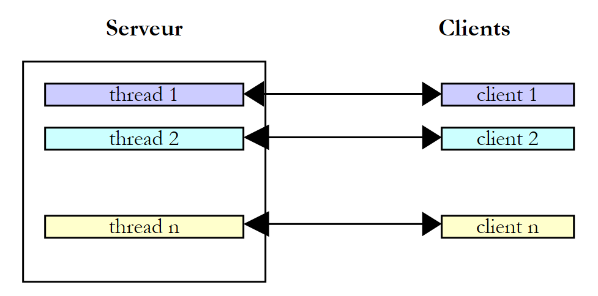
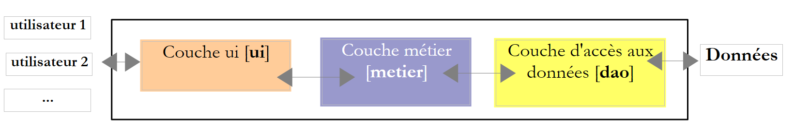

8. Execution Threads
This chapter introduces the simultaneous execution of multiple pieces of code within a single program: threads (execution threads) and the tools used to synchronize them. About twenty years ago, most machines had only one processor, and parallelism was largely an illusion maintained by the operating system. Today, even the most basic laptop has multiple cores: multiple threads actually run at the same time, making the synchronization issues discussed here even more prevalent.
Kotlin does not have its own threads in JVM: it uses Java's threads, which were integrated into Java starting with its first version (1996) via the [Thread] class, the keyword [synchronized], and the methods [wait] and [notify] of the [Object] class. Java 5 (2004) added the [java.util.concurrent] package and its subpackages [java.util.concurrent.locks] and [java.util.concurrent.atomic]: locks, semaphores, concurrent collections, thread pools, etc. Java 7 added the [Fork/Join] framework, Java 8 introduced parallel streams, and Java 21 introduced virtual threads, all of which profoundly changed the way servers are written. Java 25 finally introduces scope-bound values ([ScopedValue]). All these classes from the JDK framework are directly usable in Kotlin: this is one of its major strengths. The Kotlin standard library adds a few functions on top of this that make them more convenient to use: the [thread] function and the [withLock] extension function from the [kotlin.concurrent] package, the [synchronized] function, and the [@Volatile] and [@Synchronized] annotations… We’ll cover all these tools in this chapter.
However, threads are not Kotlin’s final word on concurrent programming: its native solution for asynchrony is coroutines, which are introduced in Chapter 9. They are based on threads, and everything we’ll cover here (critical sections, write visibility, deadlocks, etc.) remains essential for fully understanding them.
The examples are in the Gradle project [08-threads]. Each program is a file located in a package bearing its name ([threads01/Threads01.kt] in the package [threads01]…) and is executed by [gradlew -q run -Pmain=threads01.Threads01Kt], or by the green triangle in IntelliJ IDEA. Any program arguments are passed to Gradle using the option [--args]: [gradlew -q run -Pmain=threads08.Threads08Kt --args="5"].
A word of caution before you begin: the results of a multithreaded program vary from one run to the next. The order in which threads gain access to the processor depends on the operating system, the number of processors, and the machine’s load. The results reproduced in this chapter were obtained on a dual-processor Linux machine shared with other highly active programs. If you run the examples, you will get similar results, but they will rarely be identical. We will indicate in each case what is reproducible and what is not.
8.1. The Thread Class
When an application is launched, it runs in an execution flow called a thread. The class that models a thread is the [java.lang.Thread] class in the JDK package. Recall that Kotlin represents the Java accessors [getXxx()] / [setXxx(…)] (and [isXxx()] for a boolean) as properties: we write [thread.name = "Main"] rather than [thread.setName("Main")]. The main constructors, properties, and methods of the class are as follows:
Member | Role |
[Thread(tâche: Runnable)], [Thread(tâche: Runnable, nom: String)] | creates a thread that will execute the method [run] of [tâche]. [Runnable] is the Java interface [void run()]: using the SAM conversion (Chapter 7), it is passed a lambda [{ … }] or a function reference [::f] |
[thread(start, isDaemon, name, …) { … }] | (Kotlin library, package [kotlin.concurrent]) creates a thread that executes the lambda, configures it with named arguments, and, by default, runs it immediately |
[Thread.ofPlatform()], [Thread.ofVirtual()] | (Java 21) provide a “builder” for platform threads or virtual threads, which can be configured (name, daemon, etc.) before the thread is created |
[Thread.currentThread()] | the thread that executes the code that called this method |
[name] | the thread’s name (a modifiable property), useful for tracking |
[threadId()] | (Java 19) a unique numeric identifier for the thread, of the type [Long]; it replaces [getId()], which is deprecated |
[isDaemon] | indicates (fixed) whether the thread is a daemon thread (see below) |
[priority] | the thread’s priority, ranging from 1 ([MIN_PRIORITY]) to 10 ([MAX_PRIORITY]), with 5 ([NORM_PRIORITY]) as the default |
[state], [isAlive] | thread status ([NEW], [RUNNABLE], [BLOCKED], [WAITING], [TIMED_WAITING], [TERMINATED]); [isAlive] indicates whether it has been started and is not yet complete (read-only) |
[isVirtual] | (Java 21) indicates whether the thread is a virtual thread (read-only) |
[start()] | Starts the thread |
[join()], [join(délai: Duration): Boolean] | The thread T1, which is executing [T2.join()], is blocked until the thread T2 has finished. The second form (Java 19) limits the wait time and indicates whether T2 has finished |
[Thread.sleep(ms: Long)], [Thread.sleep(d: Duration)] | the thread executing the method is suspended for [ms] milliseconds (for the duration [d]). It loses the CPU, which is given to another thread |
[interrupt()], [isInterrupted] | asks the thread to suspend; checks whether a suspension has been requested (see below) |
The methods [join] and [sleep] throw the exception [InterruptedException] if the thread is interrupted while waiting. In Java, this is a checked exception, which the compiler requires to be handled or declared in a [throws] clause. Kotlin does not have controlled exceptions (Chapter 3): the compiler does not enforce anything. This does not mean you can ignore what this exception signifies: we will discuss this in the section on thread interruption.
The [Thread] class also has a method, [stop], which forcibly terminated a thread. It has been deprecated since Java 1.2, and since Java 20, it simply throws the [UnsupportedOperationException] exception: abruptly stopping a thread could leave the data it was handling in an inconsistent state. Today, we ask a thread to stop cooperatively by interrupting it: we’ll look at this a little later.
Here is an initial application demonstrating the existence of a main execution thread—the one that executes the function [main]. The program [Threads01.kt] is as follows:
Results:
Comments:
- line 9: a reference to the thread executing the program is retrieved;
- Lines 11–14: We display its name, modify it (a simple assignment to the property [name], which calls the Java method [setName]), and then display it again. Initially, the main thread is named [main] (line 1 of the results): the Java launcher assigned this name to it;
- Lines 15–22: Some properties of the thread. In this execution, the main thread has ID 3: the virtual machine creates a few threads for its own purposes before executing [main], and this ID may vary from one version of Java to another. This is neither a daemon thread ([isDaemon] equals [false]) nor a virtual thread (we will discuss these two concepts later); its priority is the normal priority of 5; it is currently running ([RUNNABLE]). The thread’s method [toString], called by the template ["$principal"] (line 21), displays its ID, name, priority, and the name of its thread group ([main]);
- line 22: the machine on which the example was run has 2 processors;
- lines 26–29: a loop that prints a message every second. [Thread.sleep(1000)] suspends the main thread for one second. In Java, the function [main] had to declare the controlled exception [InterruptedException] in a [throws] clause; in Kotlin, there is no such requirement. Note the [HH:mm:ss] format (hours from 0 to 23): the [hh] format would display hours from 1 to 12.
8.2. Creating Execution Threads
It is possible to have applications where pieces of code execute “simultaneously” in different execution threads. If the machine has fewer processors than there are threads ready to execute, the threads share the processors: each one has access to them in turn for a brief moment (a few milliseconds). On a multiprocessor machine, multiple threads actually execute at the same time. The amount of time allocated to a thread depends on various factors, including its priority, which has a default value but can be set programmatically (property [priority]); this is merely a guideline, which the operating system is free to ignore (Linux ignores it by default). A thread that has access to the processor may release it early:
- by waiting for an event (completion of another thread with [join], waiting for a signal);
- by entering a sleep state for a specified duration ([sleep]).
A thread T is first created, for example by the constructor [Thread(tâche, nom)], where [tâche] is an object that implements the Java interface [Runnable], whose only method is [void run()]. Using the SAM conversion described in Chapter 7, a lambda or a function reference of type [() -> Unit] is passed instead of a [Runnable]. In older code, we also encounter classes derived from [Thread] that redefine its [run] method: this is not recommended, as it mixes the task to be performed with the means of executing it.
Creating a thread does not start it:
- the execution of thread T is started by [T.start()]: the [run] method of the task passed to T’s constructor will then be executed by thread T. The code that executes the [T.start()] instruction does not wait for thread T to finish: it immediately moves on to the next instruction. We now have two threads running in parallel. They often need to communicate with each other to track the progress of the shared work: this is the problem of thread synchronization;
- Once started, thread T runs autonomously. It stops when the function it is executing is complete;
- we can wait for it to finish executing using [T.join()]. This is a blocking instruction: the thread executing it is blocked until thread T has finished its work. This is a basic method of synchronization.
The program [Threads02.kt] is as follows:
Comments:
- line 9: the main thread is given a name;
- lines 12–14: 5 threads are created. The function [Array(5) { i -> … }] creates an array of 5 elements, where element i is the value returned by the lambda. The thread references are thus stored in an array so they can be retrieved later. Each thread executes the function [affiche] in lines 26–33;
- Line 14: The function reference [::affiche], of type [() -> Unit], is automatically converted to a [Runnable] object: The function [affiche] has no parameters and returns no result, just like [run]. In Java, in a compact source file, you would have had to write [this::affiche]; in Kotlin, [affiche] is a high-level function, which is simply referred to as [::affiche]. The second parameter of the constructor is the thread name;
- lines 17–18: the threads are launched. This operation is non-blocking: thread #i runs in parallel with the main thread that launched it;
- line 22: the main thread reaches the end of the program;
- lines 26–33: The function [affiche] displays the name and ID of the thread executing it, as well as the start and end times (to the millisecond) of execution;
- line 32: any thread executing the function [affiche] pauses for 1 second. The processor is then handed over to another thread waiting for the processor. At the end of the 1-second pause, the paused thread becomes eligible for the processor again. It will obtain it when its turn comes;
- Lines 37–42: The function [dormir] wraps [Thread.sleep]. The Kotlin compiler does not require catching the [InterruptedException] exception that [sleep] may throw. However, if it were allowed to escape from the function executed by a thread, it would terminate that thread with an error message on the console. The function [dormir] therefore catches it and resets the thread’s interrupt flag (line 42); we will explain this action in the section on interrupts. The name [_] given to the parameter of the clause [catch] indicates that this parameter is not used. We will encounter this small function in most of the programs in this chapter;
- line 47: the function [heure], written as an expression ([= …]), returns the current time in the format [HH:mm:ss.SSS] ([SSS]: milliseconds).
Results:
These results are very informative:
- First, we can see that launching a thread is non-blocking. The main thread launched 5 threads and reached the end of the program (line 5) even though thread 2 had not yet displayed its first message;
- the execution order of the threads is unpredictable: in this run, threads 3 and 4 displayed their start messages before thread 0. The operating system has 6 threads and 2 processors here; it allocates the processors to these threads according to its own rules;
- We also note that the order of the displays does not always follow the order of the displayed times: the main thread displayed its end at 14.490, after messages dated 14.491 and 14.492. The time is calculated before the output, and in the meantime, another thread may have written to the console. [println] (which calls [System.out.println]) is thread-safe: two lines written by two threads do not get mixed up, but their order is not guaranteed;
- the IDs of the created threads (21 through 25) show that the virtual machine had already created about twenty threads for its own purposes (garbage collection, just-in-time compiler, etc.);
- Each thread pauses for one second with [sleep], then completes execution of the function [affiche];
- Finally, the program did not stop when the main thread finished its work: the virtual machine waited for all five threads to complete. This is because these threads are not daemon threads: the Java virtual machine stops when all its non-daemon threads have finished.
Conversely, a thread can be declared a daemon thread by setting its property from [isDaemon] to [true] before launching it. Daemon threads are service threads that do not prevent the virtual machine from stopping: when the last non-daemon thread terminates, they are stopped. The program [Threads03.kt] creates them using the [thread] function from the Kotlin library:
Comments:
- line 6: the function [thread] belongs to the [kotlin.concurrent] package in the standard library; it must be imported;
- Lines 13–16: The function [thread(…) { … }] creates a thread that will execute the lambda expression following the parentheses (the syntax of the “final lambda,” Chapter 7). All of its other parameters have default values; the ones we need are set using named arguments: here, [isDaemon = true] and [name = "$i"]. Its signature is as follows: [fun thread(start: Boolean = true, isDaemon: Boolean = false, contextClassLoader: ClassLoader? = null, name: String? = null, priority: Int = -1, block: () -> Unit): Thread]. By default ([start = true]), the thread is launched immediately; the function returns the created thread. It is a useful replacement for the Java sequence [var t = new Thread(…); t.setDaemon(true); t.start();]. The range [0..<5] (integers from 0 to 4) is the same as [0 until 5];
- Line 21: The main thread waits 100 ms to give the threads time to start, then it terminates.
Results:
All 5 threads began execution, then the main thread terminated (line 6). Note that its message, dated 15.819, is displayed after messages dated 15.827 through 15.833: it had calculated the time before the other threads wrote anything. The daemon threads were then stopped during their one-second sleep period: no end messages are displayed. On a heavily loaded machine, some threads do not even have time to display their start messages, as 100 ms is not enough for them to acquire the processor: another run may therefore produce a different number of start messages, but never any end messages. The same effect is achieved by ending [main] with [exitProcess(0)] (package [kotlin.system], which calls [System.exit(0)]), which shuts down the virtual machine, and thus all of the application’s threads, whether daemons or not. Virtual threads, which we’ll discuss later, are always daemon threads.
If the main thread wants to wait for the threads it has created to finish, it uses the [join] method. The [Threads04.kt] program also shows how to have a thread execute a function with parameters:
Comments:
- Lines 13–15: The function [map] converts the range [0..<5] into a list of 5 threads, which are created and launched by the function [thread]. [taches] is of type [List<Thread>];
- line 15: the thread executes the lambda [{ affiche(i, 1000L + 100 * i) }]. This syntax allows calling a function with typed parameters (in this case, a [Int] and a [Long]), whereas [run] has none;
- the lambda directly uses the parameter [i] from the lambda [map]. In Java, it would have had to use a copy of the loop variable ([int numero = i;]), because a Java lambda can only use variables that are effectively final, and the loop variable [i] of a [for (int i = 0; …; i++)] is modified. In Kotlin, this issue does not arise here: [i] is a parameter, and therefore immutable, and the same applies to the loop variable [for (i in 0..<5)], which is a new variable [val] on each iteration. Kotlin also allows a lambda to capture a variable [var] and modify it (Chapter 7); however, a variable [var] shared among multiple threads raises concurrent access issues that we will examine later. The pitfall we’ve avoided is a classic one: a thread that starts late must not read the value of [i] from a subsequent iteration;
- lines 19–21: the main thread waits for each of the threads. It is first blocked waiting for thread 0, then for thread 1, and so on. When it exits the loop, the 5 threads it launched have finished;
- line 32: task No. i sleeps for 1,000 + 100 × i milliseconds, so that the threads terminate in a known order.
Results:
The start messages appear in any order, but the end messages appear in numerical order, since the sleep durations are in ascending order: this part of the result is reproducible. The last line shows that the main thread finished after the threads it had launched, at the moment the last of them finished.
8.3. Stopping a Thread: Interruption
How do you stop a thread before it finishes its work, for example, when the user cancels a long-running operation? The JVM does not allow you to kill a thread; it provides a cooperative mechanism called interruption:
- Each thread has an interrupt flag, a Boolean initially set to [false];
- A thread named T1 that wants to terminate the thread T2 calls [T2.interrupt()]. This sets the termination flag for T2. This is a request to terminate: T2 is not terminated; it is up to that thread to decide when and how to terminate itself, so as to leave its data in a consistent state;
- if T2 is blocked in a waiting method ([sleep], [join], [wait], and most of the blocking methods in [java.util.concurrent]), it is woken up: the method throws the [InterruptedException] exception, and the interrupt flag is reset to [false];
- if T2 performs calculations without ever waiting, it must check its own flag using [Thread.currentThread().isInterrupted] at regular intervals.
In Java, blocking methods declare the controlled exception [InterruptedException]: the compiler requires the programmer to decide what to do with a stop request. Kotlin does not require this, but the decision still needs to be made, and it is the same. There are two correct responses: let the exception propagate to the caller, or intercept it and cleanly finish the task. When neither option is possible, as in the function [dormir] of the program [Threads02.kt], the flag is reset via [Thread.currentThread().interrupt()] so that the calling code can still see the request. The only incorrect response is to ignore the exception. The program [Threads05.kt] demonstrates all three cases:
Comments:
- lines 10–21: The thread [dormeur] is created and launched by a platform-specific thread constructor, [Thread.ofPlatform().name("dormeur")], whose method [start] receives the lambda to be executed (we will introduce these constructors with the program [Threads06.kt]). It spends most of its time in [Thread.sleep]. The loop [while (true)] has no termination condition: it is the exception [InterruptedException], thrown by [sleep] when the thread is interrupted, that causes the loop to exit (line 19). The lambda is a [try] statement that encompasses the thread’s entire work: upon receiving the exception, the thread displays a message and then terminates;
- lines 25–31: the thread [calculateur] never waits. It checks its interruption flag on every loop iteration (line 28). The Java method [isInterrupted()] is treated by Kotlin as a Boolean property [isInterrupted]. The number of iterations is displayed by the Kotlin string function [format], which uses the formats from [String.format]: [%,d] displays an integer with the thousands separator of the current language;
- lines 34–40: the [sourd] thread intercepts [InterruptedException] and continues as if nothing had happened. The stop request is lost: this is the mistake to avoid. It is a daemon thread ([daemon()]), so that the program can terminate without waiting for it;
- line 46: the main thread lets the other threads run for one second;
- lines 48–50: it requests that the three threads stop;
- lines 52–54: it waits for each thread to finish for at most one second. The method [join(Duration)] (Java 19) returns [true] if the thread has finished within that time, and [false] otherwise. [Duration.ofSeconds(1)] represents a duration of one second (class [java.time.Duration]).
Results:
The threads [dormeur] and [calculateur] terminated a few milliseconds after the request; the thread [sourd] ignored it and had still not finished one second later ([false], last line). The number of iterations of the calculator varies greatly from one run to the next, depending on the share of CPU time it was allocated; the rest of the result is reproducible, to within an order of magnitude, for lines 4 through 6.
An interruption is the mechanism that shuts down the entire Java library: We’ll see later that the [cancel] method of a task ([Future]) and the abrupt closure of a thread pool ([shutdownNow]) interrupt the affected threads. The coroutines discussed in Chapter 9 have their own mechanism—cancellation, which is also cooperative—as well as other ways to stop a process, such as timeouts.
8.4. Virtual Threads
The threads we’ve created so far are platform threads: each one is a wrapper around an operating system thread, which it occupies for its entire lifetime. An operating system thread is a costly resource: creating it takes time, its stack reserves memory (on the order of a megabyte), and the system cannot efficiently manage more than a few thousand of them. However, a server that dedicates a thread to each client (see the diagram in the following paragraph) spends most of its time waiting: for a response from a database, for the client’s next request… During these waits, the system thread is blocked and unusable.
Java 21 introduced virtual threads (JEP 444), which can be used as-is in Kotlin. A virtual thread is a [Thread] object like any other, but it is managed by the Java Virtual Machine rather than by the operating system:
- To execute, a virtual thread is mounted on a platform thread, called its “carrier thread.” Carrier threads form a small pool, whose size defaults to the number of processors;
- when a virtual thread blocks ([sleep], waiting for network I/O, a lock, a blocking queue, etc.), it is unmounted: its stack is set aside in the virtual machine’s memory, and the carrier thread is immediately available for another virtual thread. When the wait ends, the virtual thread is reattached to a host thread—not necessarily the same one;
- a virtual thread takes up a few hundred bytes: millions can be created.
Kotlin coroutines (Chapter 9) are based on a similar idea—suspending a process that waits without blocking a system thread—but implemented by the Kotlin compiler rather than by the virtual machine. We will compare the two approaches in Chapter 9.
The program [Threads06.kt] compares the launch of 10,000 platform threads and 10,000 virtual threads, each of which sleeps for one second:
Comments:
- lines 7–8: The function [mesurer] is called twice—first with a platform thread constructor ([Thread.ofPlatform()]) and then with a virtual thread constructor ([Thread.ofVirtual()]). Both constructors share the common type [Thread.Builder]; the rest of the code is identical. A constructor is configured through chained calls: [name("virtuel")] sets the thread name; [name("", 0)] would request threads named with a prefix followed by a number starting at 0; [daemon()] (platform threads only) requests daemon threads. Its method [start(Runnable)] creates a thread and starts it immediately; its method [unstarted(Runnable)] creates it without starting it;
- lines 21–26: The function [mesurer] launches [nbThreads] threads that sleep for one second, waits for them to finish, and displays the total duration. The function [List(n) { … }] constructs the list of threads created and launched by [constructeur.start { … }] (a lambda converted to [Runnable]). The [System.nanoTime()] method returns a time in nanoseconds, which is used solely to measure durations;
- lines 11–14: a virtual thread named [virtuel] displays its textual representation before and after a sleep;
- line 17: a virtual thread is always a daemon thread.
Results:
- 10,000 platform threads took several seconds to do what should have taken one second: creating the system threads and managing their stacks came at a high cost. With 100,000 threads, the program would likely fail due to a lack of memory or available system threads;
- 10,000 virtual threads completed the same task in just over one second: while dormant, they did not occupy any system threads. The exact times vary from one run to another, but the difference between the two types of threads is reproducible;
- the textual representation of a virtual thread ([VirtualThread[#…,virtuel]]) indicates, after the character [@], the carrier thread on which it is mounted: a thread from the [ForkJoinPool-1] pool, which we will revisit later. In this execution, the virtual thread went to sleep on the carrier [worker-2] and resumed execution on the carrier [worker-1]: it was indeed unmounted and then remounted on another carrier (this depends on the execution).
Virtual threads do not make computations faster: a computation that keeps the processor busy without ever waiting does not run any faster in a virtual thread than in a platform thread, and the number of concurrent computations remains limited by the number of processors. Their benefit lies in being able to dedicate, without counting the cost, a thread to each task that spends most of its time waiting: this is the case for servers, the following paragraph, and Chapters 12 and 13. Everything we will cover regarding thread synchronization applies equally to both virtual threads and platform threads.
8.5. The Purpose of Threads
Now that we’ve highlighted the existence of a default thread—the one that executes the [main] function—and we know how to create additional ones, let’s take a closer look at the benefits of threads. They have two main uses:
- to utilize all the machine’s processors for a time-consuming calculation: the work is divided into pieces assigned to different threads. We’ll do this using parallel streams and the [Fork/Join] grid at the end of this chapter;
- to perform multiple tasks simultaneously, particularly when some of them primarily involve waiting (for a network response, a disk read, or user input). This is the case with client/server Internet applications, which we’ll cover in Chapter 12.
In a client-server Internet application, a server located on a machine S1 responds to requests from clients located on remote machines C1, C2, …, Cn:

We use Internet applications that follow this pattern every day: web services, email, file transfers, etc. In the diagram above, the server S1 must serve clients Ci simultaneously. If we take the example of a file server, we know that a transfer can sometimes take several minutes. It is out of the question for a single client to monopolize the server for such a long period of time. A common solution is for the server to create as many execution threads as there are clients. Each thread is then responsible for handling a specific client:

With platform threads, the server effectively uses a thread pool—discussed later—whose limited number of threads caps the number of clients served simultaneously. With virtual threads, the scheme above once again becomes the optimal solution: one virtual thread per client, even if there are tens of thousands of clients, since a waiting client does not occupy any system threads. This is what JVM web servers, such as Tomcat—which we’ll use in Chapter 13—now support. In Kotlin, the coroutines covered in Chapter 9 offer another solution to this same problem: one coroutine per client.
8.6. Exchanging Information Between Threads
In the previous examples, threads executed a function with no parameters, or a lambda that called a function with parameters. Since the [run] method of [Runnable] has neither parameters nor a return value, the lambda passes information to the launched thread: it captures the variables it needs. If the captured variable refers to an object, the launched thread can also store results in it that the launching thread will read. The program [Threads07.kt] is as follows:
Comments:
- Lines 10–16: The information exchanged with each thread is a [Donnees] object. There is a two-way exchange of information between the launching thread and the launched thread. [debut] and [duree] are properties of [val] declared in the primary constructor: they are set once and for all when the object is constructed:
- [debut]: the thread’s execution start time, set by the launching thread;
- [duree]: duration in seconds of the launched thread’s sleep, set by the launching thread;
- [fin]: the thread’s execution end time, set by the launched thread. This is a [lateinit var] property (Chapter 4): it has no value when the object is constructed, but it is not of type [LocalTime?]. Reading it before it has been assigned would throw the [UninitializedPropertyAccessException] exception. The corresponding Java class was nearly thirty lines long, including its accessors;
- lines 28–29: a [Donnees] object is created and added to the [donnees] list;
- line 31: the lambda [{ dormir(d) }] captures the variable [d]: the launched thread will execute the function [dormir] on lines 49–57 with the object [d] as a parameter. The operator [+=] adds the thread returned by the function [thread] to the modifiable list [taches];
- lines 36–42: The main thread waits for each of the threads it has launched to finish, then retrieves the [Donnees] object from the thread and displays its contents. The function [zip] combines the two lists into a list of pairs ([Pair<Thread, Donnees>]), which the loop [for] unpacks into [(tache, d)]. The actual duration is calculated by [Duration.between(début, fin)];
- line 52: the parameter’s [duree] property sets the sleep duration;
- line 57: the [fin] property of the parameter is populated.
Results:
This example shows that two threads can exchange information:
- The calling thread can control the execution of the called thread by providing it with information;
- The launched thread can return results to the launching thread.
In order for the launching thread to know when the results it is expecting are available, it must be notified when the launched thread has finished. Here, it waited for the thread to finish using the [join] method. This isn’t just a matter of timing: we’ll see in the section on the [@Volatile] annotation that a write operation performed by one thread isn’t necessarily visible to another. Java’s memory model, which applies to any program executed by JVM— and therefore to Kotlin programs, guarantees that everything written by a thread is visible to the thread that waited for it to finish using [join], and that everything written by the calling thread before [start] is visible to the called thread. We’ll explore other ways to synchronize later on.
Instead of a lambda, we could write a class that implements [Runnable] and whose properties contain the exchanged information. The lambda is more concise; it is the most common way to write this today. To retrieve the result of a processing operation, we’ll also look later at the [Callable<V>] interface, whose [call()] method returns a result, and, in Chapter 9, the [async] function of coroutines, which returns a deferred result ([Deferred]).
8.7. Concurrent Access to Shared Resources
8.7.1. Unsynchronized concurrent access
In the previous paragraph, information was exchanged only between two threads and at very specific times: this was a classic example of parameter passing. There are other cases where information is shared by multiple threads that may want to read or update it at the same time. This raises the issue of the integrity of this information. Suppose the shared information is a structure S containing various pieces of information I1, I2, …, In:
- a thread T1 begins updating structure S: it modifies field I1 and is interrupted before completing the full update of structure S;
- a thread T2 that acquires the processor then reads structure S to make decisions. It reads a structure in an unstable state: some fields are up to date, others are not.
This situation is called concurrent access to a shared resource—in this case, structure S. It is often difficult to manage. Let’s consider the following example to illustrate the problems that can arise:
- an application will generate n threads, where n is passed as a parameter;
- the shared resource is a counter that must be incremented by each generated thread;
- at the end of the application, the counter’s value is displayed. It should therefore equal n.
The program [Threads08.kt] is as follows:
Comments:
- Lines 9–24: The shared resource is the property [valeur] of the singleton object [Compteur] (declaration [object], Chapter 4). The counter is encapsulated within this object, with the function [incrementer] executed by each thread. The keyword [private set] (line 12) makes the property readable from anywhere but modifiable only within the object: this is equivalent to the private field and its accessor [getValeur] in the Java version;
- line 18: the counter is read;
- line 21: the thread pauses for 1 second. It therefore loses the CPU;
- line 23: the counter is incremented;
- lines 30–34: the number of threads is passed as an argument. The expression [args.singleOrNull()?.toIntOrNull() ?: -1] returns the integer contained in the program’s single argument, or -1 if there is not exactly one argument ([singleOrNull] then returns [null]) or if that argument is not an integer ([toIntOrNull] then returns [null]). The condition [nbThreads !in 1..nbMaxThreads] therefore rejects both a missing or invalid argument and a number outside the interval [1, 100]. In Java, it was necessary to write a method that intercepts [NumberFormatException]. In the event of an error, the program writes a message to the error output ([System.err]) and terminates with exit code 1 ([exitProcess(1)], from the [kotlin.system] package);
- line 38: each thread executes the function [incrementer] of the object [Compteur], referred to by the linked reference [Compteur::incrementer];
- lines 39–41: the threads are launched, and then the main thread waits for them to finish.
The one-second pause is included solely to force the thread to yield the CPU between reading and writing the counter. In practice, there is no guarantee that a thread will not be interrupted between these two moments, and on a multiprocessor machine, two threads may even read the counter at exactly the same time. The one-second sleep simply formalizes this risk.
With Gradle, program arguments are passed using the [--args] option. Without any arguments, an error message is displayed (the [echo $?] command in the Linux shell displays the exit code of the last program executed; on Windows, it is [echo %errorlevel%]). To ensure that the program’s exit code is displayed—and not Gradle’s (which also reports the failure of the [run] task)—we ran the compiled class directly here using the [java] command:
With 5 threads:
Looking at these results, it’s clear what’s happening:
- A first thread reads the counter. It finds 0. It pauses for 1 s and thus loses the CPU;
- a second thread also reads the counter value. It is still 0 since the previous thread has not yet incremented it. It also pauses for 1 second;
- in less than a second, all 5 threads have time to read the value 0;
- when they wake up, they increment the value 0 they read and all write the value 1 to the counter, as confirmed by the last line (line 11). This incorrect result is reproducible: only the order of the threads changes from one execution to the next.
One might object that the example is artificial. So let’s remove the sleep and use the operator [++], which gives the illusion of a single instruction. The program [Threads09.kt] is as follows:
Comments:
- lines 11–12: The number of threads (4 by default) and the number of increments performed by each thread (50 million by default) can be passed as arguments. [args.getOrNull(0)] returns the first argument, or [null] if it does not exist: the Elvis operator [?:] then provides the default value. The separator [_] makes the constant [50_000_000] readable;
- line 19: threads are created and launched by [Thread.ofPlatform().start { … }]; they do not need names. The function [List(nbThreads) { … }] collects the created threads into a list;
- line 22: Each thread increments the shared counter without pausing;
- lines 30–31: in the format string, [%,d] displays an integer using the thousands separator for the current language (in this case, French: a thin, non-breaking space).
Results:
Tens of millions of updates were lost during the first test. The high-level operation [Compteur.valeur++] is in fact translated into several basic processor instructions: read the value from memory, increment it in a register, and write the result to memory. If two threads read the same value before one of them has written its own, an increment is lost, exactly as in the previous example.
Tests 2 and 3 warrant an explanation: they produced the exact value. The most likely explanation is as follows: after a certain amount of execution time, the virtual machine’s on-the-fly compiler (JIT) optimized the loop [repeat(nbIncrements) { … }] (a function [inline], which the Kotlin compiler replaced with a simple loop): it determined that no other thread was supposed to access the counter during the loop (nothing in the code requires this) and placed the counter in a processor register. Each thread then reads the counter once, adds 50 million to it in its register, and writes it back once at the end. If the threads’ work does not overlap—which was the case here—the result is correct; if, on the other hand, all four threads read the value 0 before any of them has written to it, three out of four results are lost—that is, 150 million updates at once. In this run, only the first test—which was executed largely before this optimization—lost updates; in other runs, tests 2 and 3 may also lose updates, sometimes 150 million at once. This is what makes these errors so dangerous: a program can run for months and then fail on the very day the machine is under heavier load or running faster.
Where does the problem come from? One thread read an outdated value because another thread had been interrupted, or was working simultaneously on another processor, before it had finished its task of updating the counter. This brings us to the concepts of critical resources and critical sections in a program:
- a critical resource is a resource that can be held by only one thread at a time. Here, the critical resource is the counter;
- a critical section of a program is a sequence of instructions in a thread’s execution flow during which it accesses a critical resource. We must ensure that, during this critical section, the thread is the only one with access to the resource.
In the program [Threads08.kt], the critical section is the code between reading the counter and writing its new value:
To execute this code, a thread must be guaranteed to be the only one running. It may be interrupted, but during that interruption, no other thread must be able to execute this same code. JVM provides various tools to ensure single-threaded entry into critical sections of code, and Kotlin offers some functions to use them more conveniently. We’ll look at a few of them now.
8.7.2. The synchronized function and the @Synchronized annotation
In Java, the block [synchronized] delimits a critical section as follows: [synchronized (verrou) { …section critique… }]. [verrou] is an object visible to all threads executing the critical section. On the JVM, every object has an internal lock, also known as a monitor. The block [synchronized] ensures that only one thread at a time holds the monitor of the object [verrou], meaning that only one thread at a time executes the critical section: a thread that encounters a monitor held by another thread is blocked until the monitor is released. The monitor is released upon exiting the block, whether the exit is normal or due to an exception.
Kotlin does not have a [synchronized] keyword. Instead, its standard library provides a [synchronized] function, whose signature is [inline fun <R> synchronized(lock: Any, block: () -> R): R]. Thanks to the syntax of the final lambda, its call [synchronized(verrou) { …section critique… }] is written exactly like the Java block. Since the function is [inline], the Kotlin compiler replaces the call with the body of the lambda, surrounded by the same instructions as JVM, just like the Java block ([monitorenter] / [monitorexit]): there is no difference in execution. The function returns the value of the lambda, which allows us to write [val v = synchronized(verrou) { compteur }].
The previous example is rewritten as follows in [Threads10.kt]:
Comments:
- Line 13: [verrou] is the object that will enable synchronization of all threads. It serves only this purpose: it is a simple object of the [Any] class, the root of the Kotlin classes (the equivalent of [Object]). It is a property of [val]: the reference must never change, otherwise two threads could lock two different objects. It is private: no code outside the [Compteur] object can acquire this lock;
- line 11: the counter is now a private property; it is accessible from the outside only through the property [valeur];
- lines 16–17: The property [valeur] has no field: its accessor [get] reads the counter under the protection of the lock and returns the value returned by the function [synchronized], which is the value from the lambda [{ compteur }]. Here, this isn’t strictly necessary, since the main thread waited for the other threads to finish using [join]; but it’s good practice: data protected by a lock must be read and written under the protection of that lock;
- lines 24–32: The critical section of the function [incrementer] is enclosed by the call to the function [synchronized]. The thread holds the lock while it sleeps for one second: the other threads cannot enter;
- lines 52–55: The main thread waits for the threads in the reverse order of their creation. The function [asReversed] returns a view of the list traversed in reverse order, without copying it.
Results with 3 threads:
- All three threads request entry into the critical section at nearly the same time;
- only one enters it—in this case, thread 2 (the order of entry is not guaranteed: it is not necessarily the first to arrive that enters first). It reads the counter, sleeps for one second, writes the new value, and exits the critical section;
- the other two threads are blocked until the first one exits the critical section, then proceed one after the other. Each reads the value written by the previous one. Note (lines 7–8) that Thread 1 read the counter before Thread 2 indicated that it had exited the critical section: Thread 2 did indeed release the lock, but it does not display its message until after the block [synchronized], and Thread 1 was faster;
- the main thread was waiting for Thread 2 to finish. When notified that Thread 2 had finished, it waited for Thread 1 to finish, then for Thread 0 to finish;
- The number of threads is correct (last line). Regardless of the order in which the threads run, this result is reproducible.
In Java, the keyword [synchronized] can also be used to annotate an entire method. Kotlin provides the annotation [@Synchronized] (package [kotlin.jvm], imported automatically) for this purpose: [@Synchronized fun m() { … }] generates a Java method [synchronized], which is equivalent to a [synchronized(this) { … }] call that encompasses the entire body of the function. In a [object] such as [Compteur], the locked object is the singleton object itself. We’ll use it in the program [Threads17.kt]. This is the shortest syntax. However, it has a drawback: the locked object is visible from the outside, and external code can acquire the same lock and block ours. Therefore, it is often preferable to lock a private object, as in the example. For the same reason, you should never lock a string (identical string literals are a single shared object used throughout the program). Kotlin goes a step further than Java when it comes to numbers: locking a *[Int]*—which would be converted to a shared *[Integer]* object—is a compilation error (***[error: synchronizing on 'Int' is forbidden.]***), whereas Java only issues a warning for objects of “value-based” classes.
A thread that already holds a monitor can re-enter a [synchronized] block on the same object without blocking itself: the lock is said to be reentrant. A [@Synchronized] function can thus call another [@Synchronized] function on the same object.
8.7.3. The ReentrantLock class
The [synchronized] lock is simple but rigid: a thread waiting on a monitor waits indefinitely, without being able to give up after a certain amount of time, and without being able to be interrupted. The [java.util.concurrent.locks.ReentrantLock] class (Java 5) is an explicit lock—which is also reentrant—that offers these capabilities. It implements the [Lock] interface. We will use the following constructors and methods:
Member | Role |
[ReentrantLock()], [ReentrantLock(équitable: Boolean)] | creates a lock. A fair lock ([true]) is granted to threads in the order in which they requested it; a non-fair lock (the default) is faster, but a thread may cut in front of others |
[lock()] | The thread T1, which is executing [V.lock()], requests lock V. If V is not held by any thread, it is granted to T1. If a thread T2 then performs the same operation, it is blocked: a lock can belong to only one thread. T2 will be unblocked when T1 releases V. Thus, multiple threads may be blocked while waiting for V |
[tryLock(): Boolean], [tryLock(délai: Long, unité: TimeUnit): Boolean] | requests the lock immediately, or while waiting for at most [délai]. The method returns [false] if the lock could not be acquired |
[lockInterruptibly()] | like [lock], but the wait can be interrupted ([InterruptedException]) |
[unlock()] | The thread holding V releases it. One of the threads waiting for V then acquires it |
[isHeldByCurrentThread] | indicates whether the current thread holds the lock |
[newCondition(): Condition] | Creates a condition associated with the lock (see below) |
[withLock { … }] | (Kotlin library, package [kotlin.concurrent]) extension function for the [Lock] interface: executes the lambda while holding the lock, and releases it at the end, regardless of whether an exception occurs |
In Java, synchronizing a critical section always follows the same pattern: [V.lock(); try { …section critique… } finally { V.unlock(); }]. It is important not to forget to release the lock; otherwise, the threads waiting for it will remain blocked indefinitely. This is why the lock is released in a [finally] block, which is executed regardless of whether an exception occurs or not. The block *[synchronized] does this automatically; with *[ReentrantLock]*, it’s up to the programmer to do so. Kotlin can write exactly the same thing, but its standard library offers a better solution: the extension function [withLock]*, which applies this pattern once and for all. Its definition is essentially as follows:
This is function [inline]: the call to [verrou.withLock { … }] is replaced at compile time by the schema [lock] / [try] / [finally] / [unlock], at no additional cost, and it becomes impossible to omit [unlock]. This is the same process as the [use] function, which replaces the [try] statement with a Java resource (Chapter 3). The program [Threads11.kt] uses the previous example with a [ReentrantLock]:
The main program is that of [Threads08.kt]. Comments:
- line 15: the thread synchronization object is now a fair lock, [ReentrantLock];
- line 7: the extension function [withLock] must be imported;
- line 26: start of the critical section. The thread is blocked until the lock is released;
- lines 26–35: Because a lock must always be released, regardless of whether an exception occurs, the critical section is the lambda passed to
*[withLock]*, which releases the lock upon exiting the lambda. The message “exiting the critical section” is the last one displayed within the critical section; - lines 18–19: The same process protects the counter read. [withLock] returns the value of its lambda: the value returned by the accessor is read while the lock is held. The Java version had to write seven lines of [try] / [finally] code for this simple read operation.
Results:
The results are similar to the previous ones: the threads pass through the critical section one by one, and the final count is correct. Since the lock is fair, the threads acquired it in the order in which they requested it: the order of their calls to [lock], which the times of the “waiting for permission” messages—calculated a little earlier—only approximate (here, thread 2 showed the latest time, but it called [lock] first).
When should you use [ReentrantLock] instead of [synchronized]? When you need one of its additional features: timeout ([tryLock], which we’ll use to avoid deadlock), interruptible wait, fairness, or multiple conditions. Otherwise, the [synchronized] function works very well; with [withLock], Kotlin makes using both tools just as simple and safe. Since Java 24, [synchronized] no longer causes issues with virtual threads: previously, a virtual thread blocked in a [synchronized] block could not release its host thread, which made [ReentrantLock] the preferred choice.
8.7.4. Synchronizing processes: the file lock
The previous locks synchronize threads within the same virtual machine—that is, within the same process. Sometimes different processes need to share a resource, such as a file, or you may want to prevent two instances of the same application from being launched. JVM does not provide a named synchronization object shared between processes; for this purpose, a file lock managed by the operating system is used: the [java.nio.channels.FileLock] class. A lock is obtained on an open file in the form of a [FileChannel] channel:
- [lock(): FileLock]: waits for the lock to become available and acquires it;
- [tryLock(): FileLock?]: attempts to acquire the lock without waiting, and returns [null] if it is held by another process. Kotlin treats the return value of this Java method as a platform-specific type ([FileLock!]); it is up to the programmer to treat it as potentially being [null];
- [release()]: releases the lock. The lock is also released when the channel is closed or when the process ends, even if terminated abruptly: a lock cannot remain “orphaned.” The class [FileLock] implements the interface [AutoCloseable]: its method [close] calls [release], and the Kotlin function [use] can therefore release the lock.
The program [Threads12.kt] is launched twice, in two different processes, which share a critical section:
Comments:
- Line 13: The file used as a lock. All processes that lock this file synchronize with one another. It is placed in the system’s temporary files folder, specified by the system property [java.io.tmpdir] ([/tmp] on Linux). Its contents are irrelevant: it can remain empty;
- Line 18: The file is opened for writing (an exclusive lock requires this) and created if it does not yet exist ([CREATE]). The constants from the enumeration [StandardOpenOption] have been imported one by one (lines 6–7). The function [use] will close the channel at the end;
- lines 21–24: the process attempts to acquire the lock without waiting. If it fails ([tryLock] returns [null]), the Elvis operator [?:] executes block [run], which signals this and then waits for the lock indefinitely: the value of the block—the lock returned by [lock]—becomes the value of the variable [verrou]. This variable is therefore of a non-null type;
- lines 27–31: the critical section, which lasts 3 seconds, followed by the release of the lock by the function [use].
A file lock belongs to the entire process, not to a single thread: it is not used to synchronize threads within the same process (two lock requests on the same file within the same process trigger the [OverlappingFileLockException] exception). We start process A, wait 1.5 seconds, and then start process B in a second terminal. Results from Process A:
Results from Process B:
Process B detected the lock held by process A and waited. It acquired the lock a few milliseconds after A released it. A common use of this mechanism is to prevent the launch of two instances of the same application: the second instance, unable to acquire the lock with [tryLock], terminates immediately.
8.7.5. A Barrier: The Semaphore Class
A semaphore is a counter for permits (or slots). The [java.util.concurrent.Semaphore] class provides the following methods:
Member | Role |
[Semaphore(permis: Int)], [Semaphore(permis: Int, équitable: Boolean)] | creates a semaphore with [permis] permits; the second parameter has the same meaning as for [ReentrantLock] |
[acquire()] | acquires a permit. If there are no permits left, the thread is blocked until a permit is released. The wait can be interrupted ([InterruptedException]) |
[acquireUninterruptibly()] | same as above, but the wait cannot be interrupted |
[tryAcquire(): Boolean], [tryAcquire(délai: Long, unité: TimeUnit): Boolean] | Obtains a permit without waiting, or while waiting for at most [délai]; returns [false] in case of failure |
[release()] | returns (adds) a permit; one of the waiting threads can then take it |
[availablePermits()] | the number of available permits |
Unlike a lock, a permit does not belong to any specific thread: any thread can call [release], even if it has never acquired a permit. A semaphore created with zero permits is therefore a closed barrier, at which threads calling [acquire] are blocked. Another thread will open it when the time comes, by calling [release]. This timing depends entirely on the problem being solved. The thread that acquired the single permit passed through the barrier, which closed behind it; by returning the permit, it opens the barrier for another thread. If, in the previous example, we replace the lock with such a barrier, the code becomes the following ([Threads13.kt]):
Comments:
- line 15: the barrier is created in a closed state. It will be opened by the main thread on line 57;
- line 53: the main thread waits half a second to allow the threads to arrive at the barrier;
- line 22: the thread responsible for incrementing the counter requests permission to enter the critical section. The various threads accumulate in front of the closed barrier. When the main thread opens it, one of the waiting threads passes through, and the barrier closes again. The method [acquireUninterruptibly] makes the thread unresponsive to interrupts during this wait;
- Lines 23–35: The critical section is enclosed in a
*[try], whose*[finally]*clause releases the lock. The Kotlin standard library does not have an equivalent to*[withLock]for Java semaphores: we write the pattern [try] / [finally] as in Java (the coroutine library, however, has its own semaphore, with a function [withPermit], which we’ll cover in Chapter 9); - Line 35: When it has finished its work, the thread reopens the barrier, allowing another thread to enter.
Results:
The results are similar to the previous ones. We can see that the three threads wait at the barrier until the main thread opens it (line 4).
8.7.6. The CountDownLatch and Semaphore classes
Two additional uses of synchronization tools complement the previous examples.
A [java.util.concurrent.CountDownLatch] object is a counter: it is created with an initial value N; each call to its [countDown] method decrements it; its [await] method blocks the calling thread until the counter reaches 0. Once it reaches 0, it remains there: the barrier is permanently open and allows all threads to pass. With N = 1, this serves as the “starting signal” for a race; with N = the number of tasks, it is a way to wait for the completion of N tasks, each of which calls [countDown] when it finishes. The program [Threads14.kt] is as follows:
Comments:
- line 11: the countdown starts at 1: the gate is closed;
- lines 14–15: the 4 threads (the runners) are created and launched by the function [thread], and added to a list by the function [List(4) { i -> … }];
- line 20: Each thread waits for the countdown to reach 0. The method [await] can call [InterruptedException]; if the thread is interrupted while waiting, it drops out of the race (line 23);
- line 32: the main thread decrements the countdown timer after one second; it reaches 0;
- line 35: the property [count] (the Java method [getCount()]) returns the current value of the countdown timer.
Results:
The four runners started together, within a few milliseconds of each other, after the starting signal. A [CountDownLatch] is used only once; the [CyclicBarrier] class provides a reusable rendezvous point (the N threads wait for each other, then set off together), and the [Phaser] class generalizes these two tools.
Let’s return to the semaphore in its most common use: an N-permit semaphore allows at most N threads to enter a code section at a time. This is useful for limiting access to a resource available in limited quantities (database connections, concurrent requests to a server, etc.). The program [Threads15.kt] is as follows:
Comments:
- line 11: the semaphore has 2 permits: 2 slots;
- line 19: a thread requests a slot. If one is available, it takes it and continues; otherwise, it is blocked until a slot becomes available;
- line 22: the number of slots still available;
- line 28: the thread returns its slot, in a [finally] clause.
Results:
All five threads request a slot; two obtain one immediately (in this case, threads 3 and 4), while the other three wait. Each time a thread releases its slot, a waiting thread obtains it. There are never more than two threads in the code section. Note that thread 3 displays “free slots: 0” before thread 4 displays “free slots: 1”: thread 4 acquired its slot and read the number of free slots first, but thread 3 was faster at displaying its message. A single-permit semaphore acts as a lock, as in the program [Threads13.kt]. With virtual threads, the semaphore is the natural tool for limiting concurrency: rather than limiting the number of threads, we create one virtual thread per task and use a semaphore to limit the number of tasks that simultaneously use the scarce resource. We’ll do the same in Chapter 9 with coroutines.
8.7.7. Write Visibility: The @Volatile Annotation
Locks aren’t just used to make a group of operations indivisible. They address a second, more insidious problem: the visibility of writes. To speed things up, the processor stores values in its registers and caches, and the compiler reorders or eliminates reads and writes on the fly, as we saw with the program [Threads09.kt]. The result is that a value written by one thread may not be seen by another thread until later—or perhaps never at all.
The Java Memory Model, which governs all programs executed by the JVM—including Kotlin programs—precisely defines when a write is guaranteed to be visible: when there is a “happens-before” relationship between the write and the read. The main ones are as follows:
- Everything a thread has done before releasing a lock (end of a block [synchronized], [unlock]) is visible to the thread that subsequently acquires that lock;
- what the calling thread did before [start] is visible to the called thread; what a thread did is visible to the thread that waited for it to finish via [join];
- a write to a field [volatile] is visible to any subsequent read of that field;
- the tools in [java.util.concurrent] provide similar guarantees: what a thread did before [release()], [countDown()], or the insertion of an element into a concurrent collection, is visible to the thread that subsequently executes [acquire()], [await()], or retrieves the element.
When none of these relationships exist, the program is said to contain a “data race,” and there are no guarantees. In Java, a field is declared [volatile] using a keyword; Kotlin does not have this keyword, but it does have an annotation, [@Volatile], which is applied to a property [var]: the field that stores the property is then a Java field [volatile]. The program [Threads16.kt] demonstrates its usefulness in a common scenario: a flag that instructs a thread to stop.
Comments:
- lines 9–14: the two flags, which are properties of the singleton object [Drapeaux]. The annotation [@Volatile] (line 13), imported automatically, specifies that any read of the property [arretVolatile] must read from memory, and that any write to it must be performed immediately. The property [arret] is a regular property;
- lines 19–24: the thread T1 runs as long as the ordinary property [Drapeaux.arret] is equal to [false];
- lines 27–32: The thread T2 does the same with the volatile property [Drapeaux.arretVolatile];
- lines 38–39: After one second, the main thread passes both flags to [true];
- lines 41–43: it waits for each of the two threads for up to 2 seconds. Both threads are daemons, so that the program can terminate even if one of them is still running.
Results:
The thread T2 received the stop request immediately. The thread T1, on the other hand, never received it: it was still running two seconds later and only stopped when the virtual machine shut down. The just-in-time compiler, noting that the loop [while (!Drapeaux.arret) { tours++ }] does not modify [arret] and that no synchronization requires it to be read again, read this field only once, before the loop: the loop thus became an infinite loop. Access to the property [arret] is done through its accessor [getArret], but this makes no difference: the just-in-time compiler replaced the call to the accessor with a read of the field. This behavior is reproducible with the HotSpot virtual machine used here, but it is not guaranteed: another virtual machine, or another version, might allow T1 to halt. That is precisely the problem: without an arrive-before relationship, the program’s behavior is undefined.
The annotation [@Volatile] guarantees visibility, but not atomicity: [valeur++] on a property [@Volatile] remains a read followed by a write, and two threads can still lose an update. [@Volatile] is therefore suitable for a flag written by one thread and read by others, but not for a shared counter. To stop a thread, the interruption described above is actually preferable to a flag: it also wakes up a thread that is blocked in a wait.
8.7.8. Atomic Classes
The [java.util.concurrent.atomic] package (Java 5) provides classes that make simple operations on a variable atomic: the operation is executed entirely by the thread, without any other thread being able to observe or modify the variable in the middle of the operation. The previous tools ([synchronized], [ReentrantLock], [Semaphore]) are all designed to make a group of operations atomic, at the cost of blocking other threads. For simple but frequent operations, atomic classes avoid this blocking by using special processor instructions. The main methods of the [AtomicInteger] class are as follows:
Method | Role |
[get(): Int], [set(v: Int)] | reads and writes the value (with the semantics of a [volatile] field) |
[incrementAndGet(): Int], [decrementAndGet(): Int] | increment (decrement) the value by 1 and return the new value |
[getAndIncrement(): Int], [getAndDecrement(): Int] | same as above, but returns the previous value (such as [x++] and [x--]) |
[addAndGet(delta: Int): Int] | adds [delta] to the value and returns the new value |
[getAndSet(v: Int): Int] | assigns [v] and returns the old value |
[compareAndSet(attendu: Int, nouveau: Int): Boolean] | assigns [nouveau] only if the value is [attendu]; returns [true] if the assignment took place |
[updateAndGet(f: IntUnaryOperator): Int] | replaces the value v with f(v) atomically and returns the new value; in Kotlin, a lambda is passed to it: [a.updateAndGet { it * 2 }] |
The package also offers [AtomicLong], [AtomicBoolean], [AtomicReference<V>] (an atomic reference to an object), and atomic arrays ([AtomicIntegerArray]…). The [LongAdder] class (Java 8) is a counter designed for very frequent updates by many threads: instead of a single variable that all threads compete for, it distributes increments across multiple cells, which are only summed when the total is requested ([sum]).
The Kotlin 2.4 standard library also has its own atomic classes, common to all Kotlin platforms ([AtomicInt], [AtomicLong], [AtomicReference]… from the [kotlin.concurrent.atomics] package), but they are still experimental: the compiler requires explicit opt-in ([@OptIn(ExperimentalAtomicApi::class)]). For JVM, we therefore use those from JDK.
The program [Threads17.kt] builds on the results of the program [Threads09.kt] and compares six ways to increment the shared counter:
1 2 3 4 5 6 7 8 9 10 11 12 13 14 15 16 17 18 19 20 21 22 23 24 25 26 27 28 29 30 31 32 33 34 35 36 37 38 39 40 41 42 43 44 45 46 47 48 49 50 51 52 53 54 55 56 57 58 59 60 61 62 63 64 65 66 67 68 69 70 71 72 73 74 75 76 77 78 79 80 81 82 83 84 85 86 87 88 89 90 91 92 93 94 95 96 97 98 99 100 101 102 103 | |
Comments:
- lines 11–59: The [Compteur] object groups together the counters and the six increment functions;
- lines 12–14: The counter is [@Volatile]. This prevents the compiler from performing the on-the-fly optimization we observed with [Threads09.kt]: each increment actually reads from and writes to memory;
- line 29: the unsynchronized increment;
- lines 33–35: the increment within a critical section protected by the function [synchronized] and a private lock;
- lines 40–42: the function [avecAnnotationSynchronized] is annotated as [@Synchronized]: its entire body is a critical section, whose lock is the object [Compteur] itself;
- lines 46–48: incrementing within a critical section protected by a [ReentrantLock], using the function [withLock];
- line 54: atomic increment;
- line 59: incrementing a [LongAdder];
- Lines 71–79: The function [mesurer] is called with six different increment functions, passed as linked references ([Compteur::sansSynchronisation]…), and with a function that returns the resulting value, of type [() -> Long]. For the first four, it is the lambda [valeur] on line 71 that converts the counter’s [Int] to [Long] (no implicit conversion in Kotlin); for the [AtomicInteger], it is a final lambda; for [LongAdder], the reference [Compteur.additionneur::sum] is bound to the method [sum] of a specific object, which already returns a [Long]. In Java, it was necessary to choose the functional interfaces [Runnable] and [LongSupplier]; in Kotlin, the functional types [() -> Unit] and [() -> Long] are sufficient;
- Lines 83–102: The function [mesurer] launches [nbThreads] threads, each of which calls the received function [nbIncrements] times, and measures the total time. The format [%,12d] right-aligns the value to 12 characters, with a thousands separator; [%-22s] left-aligns the method name to 22 characters;
- Lines 86, 90, and 99: The threads all wait behind a
*[CountDownLatch]*, which is opened once they have all been launched. This allows them to begin their work simultaneously, making concurrent access much more likely than if the threads were launched one after the other. If the wait is interrupted, the [return@start] statement (line 92) terminates the lambda passed to [start]: within a lambda, a bare [return] would exit the enclosing function, which is not allowed here; so we use a label to specify which lambda we are exiting (Chapter 7).
Results:
- Without synchronization, the result is incorrect once again: the annotation [@Volatile] did not make [valeur++] atomic. The number of lost updates varies greatly from one execution to another;
- the other five methods produce the correct result, and this is reproducible;
- atomic classes are significantly faster than locks in this run. Locks are costly here because four threads are constantly competing for them over a tiny operation. The function [synchronized] and the annotation [@Synchronized] have similar costs: they are two implementations of the same mechanism, the monitor from JVM. The measured execution times depend heavily on the machine and its load (this machine had only two processors, which were heavily utilized by other programs): only their order of magnitude is meaningful, and from one run to the next, the ranking among similar methods changes. [LongAdder] was not the fastest here: with two processors, the threads interfere little with each other when accessing the single variable in a [AtomicInteger]. Its advantage becomes apparent when multiple processors are incrementing the same counter.
The [compareAndSet] method (“CAS”) is the building block of “lock-free” algorithms: it reads the value, calculates the new one, and then writes it only if the variable has not changed in the meantime; otherwise, it starts over. This is what [updateAndGet] does, and the concurrent collections presented later make extensive use of it.
8.8. Concurrent Access to Multiple Shared Resources
8.8.1. Deadlock
In our previous examples, a single resource was shared among the different threads. The situation becomes more complicated if there are multiple resources and they are dependent on one another. In particular, a deadlock can occur: two threads are waiting for each other. Consider the following actions, which occur sequentially:
- a thread T1 acquires the lock V1 to access a shared resource R1;
- a thread T2 acquires the lock V2 to access a shared resource R2;
- Thread T1 requests lock V2. It is blocked;
- the thread T2 requests the lock V1. It is blocked.
The threads T1 and T2 are waiting for each other indefinitely. Several solutions are possible:
- request both resources at the same time using a single lock. This isn’t always possible if it results in a long lock on a costly resource;
- always acquire locks in the same order: if all threads acquire V1 before V2, deadlock is impossible. This is the most commonly used rule;
- A thread holding V1 that cannot acquire V2 releases V1 to avoid deadlock.
The program [Threads18.kt] causes a deadlock and implements the last solution, using the method [tryLock] from [ReentrantLock]:
Comments:
- lines 16–17: the locks for the two resources. These are local variables here, captured by the lambdas on lines 20 and 22;
- Line 20: The thread T1, created and launched by the function [thread], acquires R1 and then requests R2; it waits for a maximum of 2 seconds. The duration is written as [2.seconds]: this is a value of type [kotlin.time.Duration] from the Kotlin standard library, constructed by the extension property [seconds] of [Int] (imported from [Duration.Companion]). This is the equivalent of Java’s [Duration.ofSeconds(2)] ([java.time.Duration]), but more readable;
- line 22: the thread T2 acquires R2 and then requests R1—that is, in reverse order; it waits for a maximum of 5 seconds;
- line 29: the function [travailler] receives locks of the type defined by the interface [Lock], which is implemented by [ReentrantLock];
- line 31: the thread acquires its first resource using the [withLock] function described above: it will release it in any case at the end of the block;
- line 35: it waits half a second, which gives the other thread time to acquire its own first resource: deadlock is then guaranteed;
- line 38: instead of a
*[lock]that would wait indefinitely, the thread requests the second lock with a maximum wait time. [tryLock] returns [true] if the lock was obtained, and [false] if the timeout expired. The timeout is expressed as a number and a unit ([TimeUnit.MILLISECONDS]); the property [inWholeMilliseconds] returns the duration [delai] in milliseconds. You cannot use [withLock] here, which calls [lock]: you must write [try { … } finally { second.unlock() }]* yourself; - line 43: a lock acquired by [tryLock] must be released by [unlock], within a [finally] clause;
- lines 45–47: if the second lock could not be acquired, the thread aborts. Upon exiting the [withLock] block, it releases its first resource;
- lines 49–50: [sleep] and [tryLock] with a timeout can invoke [InterruptedException]. Kotlin does not require this exception to be caught (it has no checked exceptions), but a well-written thread does so and resets the interrupt flag, as we saw in the section on interrupts.
Results:
Each of the two threads obtained its first resource and then requested the second: they are deadlocked. After 2 seconds, T1 gives up and releases R1; T2, which was still waiting, immediately obtains R1 and can do its work. Without a timeout, the program would never have finished. This sequence of events is reproducible; only the order of lines 1 and 2 and that of lines 3 and 4 can change (note, incidentally, that the times in the first two lines are not in order: one thread read the time first, but the other displayed its message first). We could not write this program using the [synchronized] function, whose wait time cannot be limited.
When a Kotlin program appears to be blocked, the [jcmd <pid> Thread.print] command from JDK displays the call stack for each of its threads ([pid] is the process ID, which is returned by the [jcmd] command without any parameters); it detects deadlocks between locks and reports them with the message “Found one Java-level deadlock,” followed by the threads and locks involved. The IntelliJ debugger (IDEA) offers the same functionality (Get Thread Dump button).
8.8.2. An example: readers and writers
Consider the following example:
- We have an array into which some threads write data (the writers) and others read it (the readers);
- the writers are equal to one another but exclusive: only one writer at a time can deposit data into the array;
- readers are equal to one another but exclusive: only one reader at a time can read the data stored in the array;
- a reader can only read data from the array when a writer has placed some there, and a writer can only place new data in the array when the data already there has been read by a reader.
There are two types of shared resources:
- the writable table: only one writer at a time may access it;
- the read-only table: only one reader at a time may access it.
and an order for using these resources:
- a reader must always follow a writer;
- a writer must always follow a reader, except the first time.
Access to these two resources can be controlled using two [Semaphore]-type barriers:
- The [peutEcrire] barrier controls writers' access to the board;
- the [peutLire] barrier controls readers' access to the board;
- The [peutEcrire] barrier is created in the open state (one permit), allowing the first writer to pass and blocking all others;
- The [peutLire] barrier is created in the closed state (no permission), blocking all readers;
- When a writer has finished their work, they open barrier [peutLire] to let a reader in;
- when a reader has finished their work, they open the barrier [peutEcrire] to let a writer in.
Here we see the advantage of a barrier that does not belong to any thread: the barrier [peutLire] is closed by a reader (who takes the permit) and opened by a writer (who returns it). This is impossible with a lock, which can only be released by the thread that holds it. The program [Threads19.kt] illustrating this synchronization is as follows:
Comments:
- lines 15–17: creation and launch of two reader threads, followed by two writer threads. The function [repeat] executes its lambda [nbThreads] times, passing it the current iteration number. No references are kept to the threads: the main thread does not wait for them;
- line 19: the main thread terminates immediately. The process continues until all four threads—which are not daemons—have finished;
- line 23: the shared resource and its synchronization are grouped into a singleton object, like the [Compteur] object in the previous programs (Java used a nested class with members [static]);
- line 25: the array [data], a three-element [IntArray] (compiled to [int[]]), is the shared resource between the reader and writer threads;
- line 27: The barrier [peutLire] signals to readers that they may read the array. It is opened by the writer who has filled the array. It is created in a closed state: a writer must first fill the array;
- line 29: The barrier [peutEcrire] notifies writers that they can write to the array. It is opened by the reader who has read the entire array. It is created open: the array is writable from the start;
- line 36: a reader waits for a writer to signal that the array has been filled. When this signal arrives, only one of the waiting readers proceeds;
- lines 38–41: the array is read, with a half-second pause at each element to force the thread to yield the CPU;
- line 44: the reader notifies the writers that the array has been read and can be filled again;
- the function
*[ecrire]is symmetric with respect to the function*[lire]. The loop on line 55 iterates over the array indices (***[data.indices]is the range***[0..2]); - line 59: the numbers are randomly generated by the [Random] object from the Kotlin standard library ([kotlin.random.Random]). The function [nextInt(0, 1000)] returns an integer from the interval [0, 1000[. The generator [Random] can be used by multiple threads: on the JVM, it relies on the [ThreadLocalRandom] class (Java 7), which provides each thread with its own generator, so that threads do not compete for a single generator. The Java code used [ThreadLocalRandom.current().nextInt(0, 1000)] directly;
- the array [data] is not protected by any lock. However, there is no data race: the writer’s writes precede its [peutLire.release()], which precedes (earlier-than relationship) the reader’s [peutLire.acquireUninterruptibly()], and therefore its reads.
Results:
The following points are worth noting:
- there is only one reader at a time, although it loses the CPU in the critical section [lire];
- there is only one writer at a time, although it loses the processor in the critical section [ecrire];
- a reader reads only when there is something to read in the array;
- a writer writes only when the array has been fully read;
- however, the order of execution cannot be controlled: here, the reader L1 ran before the reader L0, even though L0 had been launched first; nor was there any reason why writer E0 should run before writer E1. A different execution may result in a different order.
8.8.3. The wait and notifyAll methods
In the previous example, when writers are blocked on the [peutEcrire.acquireUninterruptibly()] statement, one of them—any one—is unblocked by the [peutEcrire.release()] operation. If you want to open the barrier for a specific writer, things get more complicated.
Consider the analogy of a public service office with service counters. When a customer arrives, they take a numbered ticket from the dispenser and then go sit down. Customers are called by their number over a loudspeaker. While waiting, the customer can do whatever they want: they can read or doze off. They are woken up every time the loudspeaker announces a number. If it’s their number, the customer gets up and goes to the counter; otherwise, they go back to what they were doing. We can operate in a similar way with threads. Let’s take the example of writers:
At the counter | With threads |
several writers are waiting for the same counter | their threads are blocked |
the counter becomes available and the next writer’s number is called | the thread that was reading from the array notifies the writers that the array is available. Either that thread or another thread has determined which writer should proceed |
Each writer checks its number; only the one with the called number proceeds to the counter; the others return to the waiting queue | Each thread checks to see if it is the one selected. If so, it passes through the barrier; otherwise, it returns to the waiting queue |
JVM allows you to implement this scenario using methods available to any Java object, since they are defined in the [java.lang.Object] class:
Method | Role |
[wait()] | returns the object’s monitor and blocks the thread until another thread signals a change via [notify] or [notifyAll]; the thread must then reclaim the monitor before continuing. The wait can be interrupted ([InterruptedException]) |
[wait(ms: Long)] | same as above, with a maximum wait time |
[notify()] | wakes up one of the threads blocked by [wait] on this object |
[notifyAll()] | wakes up all threads blocked by [wait] on this object |
In Kotlin, these methods are not directly accessible. Kotlin’s root class is [Any], not [Object]: the compiler maps the two types (a *[Any] is compiled to *[java.lang.Object]*), but *[Any] declares only three functions: *[equals]*, [hashCode], and [toString]. The methods [wait], [notify], and [notifyAll] (as well as [getClass]) are intentionally omitted: the Kotlin designers felt that this low-level mechanism should not clutter up all objects, and that it was better to use the tools provided by [java.util.concurrent]. If we write, using a [val jeton = Any()] token:
the compiler responds with:
To call [wait], you need an object whose type, as far as the compiler is concerned, is [java.lang.Object]. You can cast the type to [(jeton as Object).wait()], or create the token directly using [Object()]. In both cases, the compiler issues a warning:
Since our programs are compiled with the option that converts warnings to errors ([allWarningsAsErrors = true]), it must be explicitly disabled by adding the annotation [@Suppress("PLATFORM_CLASS_MAPPED_TO_KOTLIN")] to the declaration that uses the class [Object] ([PLATFORM_CLASS_MAPPED_TO_KOTLIN] is the name of this warning: “platform class associated with a Kotlin class”). We do this once and for all below, in the token declaration: their type is then [java.lang.Object], and the calls [jeton.wait()] and [jeton.notifyAll()] no longer trigger a warning. This minor inconvenience is intentional: in Kotlin, we prefer the [Condition] interface, presented in the following section. It is nevertheless useful to be familiar with [wait] and [notifyAll], which are encountered in much existing Java code.
We will now describe a standard pattern—presented notably in the book by Brian Goetz et al., [Java Concurrency in Practice]—that can resolve barrier problems with entry conditions.
Threads that share a resource (the counter) access it via an object we’ll call a token: it’s a simple object ([Object()]) whose monitor is used. To cross the barrier leading to the counter, you must have the token, and there is only one. The threads must therefore pass the token back and forth.
To go to the counter, a thread first requests the token using a block [synchronized(jeton) { … }]. If it obtains the token, it checks whether it meets the condition to proceed to the counter in a [while (!jeSuisCeluiQuiEstAttendu) { jeton.wait() }] loop, then proceeds to the counter, still within the [synchronized] block. If the thread is not the one expected at the counter, it yields its turn by returning the token via [jeton.wait()] and enters the blocked state. It will be woken up when another thread signals a change in the access condition; it will then retrieve the token and check the condition again. This is why the test is a loop ([while]) rather than a simple [if]. There is a second reason, specific to JVM: the specification allows for “spurious wakeups,” where [wait] terminates without any thread having called [notify]; the loop renders them harmless. The [jeton.wait()] operation can only be performed by a thread that holds the token monitor; otherwise, a [IllegalMonitorStateException] exception is thrown. In this scheme, the token is released only after the transaction is completed.
The thread that modifies the condition for accessing the counter must also hold the token and notify the waiting threads: within a [synchronized(jeton) { … }] block, it modifies the condition for accessing the counter, then wakes up the waiting threads using [jeton.notifyAll()].
Waking up the threads means that the waiting threads become candidates for the token; they do not receive it immediately. The token is only available at the end of the block [synchronized]. All the awakened threads will then receive the token in turn, in an indeterminate order, which gives them the opportunity to check the access condition again. The first one to satisfy the condition keeps the token and proceeds to the queue.
With this information, we can rewrite the reader/writer application by specifying the order in which readers and writers proceed to their respective counters ([Threads20.kt]):
1 2 3 4 5 6 7 8 9 10 11 12 13 14 15 16 17 18 19 20 21 22 23 24 25 26 27 28 29 30 31 32 33 34 35 36 37 38 39 40 41 42 43 44 45 46 47 48 49 50 51 52 53 54 55 56 57 58 59 60 61 62 63 64 65 66 67 68 69 70 71 72 73 74 75 76 77 78 79 80 81 82 83 84 85 86 87 88 89 90 91 92 93 94 95 96 97 98 99 100 101 102 103 104 105 106 107 108 109 110 111 112 113 114 115 116 117 118 119 120 121 122 123 124 125 126 127 128 129 130 131 132 133 134 | |
Access to the read counter is conditioned by the following elements:
- line 39: the token [peutLire], preceded (on line 38) by the annotation that disables the warning on the class [Object];
- line 43: the Boolean value [lectureAutorisee];
- line 48: the ordered list of reader names. Readers proceed to the reading station in the order of this list;
- line 45: [lecteurSuivant] is the index in this list of the next reader authorized to proceed to the window.
Access to the write counter is similarly controlled by the token [peutEcrire], the Boolean [ecritureAutorisee], the list [ordreEcriture], and the index [ecrivainSuivant].
The main program:
- lines 14–16: readers will proceed to the counter in reverse order of their creation (L2, L1, L0), and writers in the order they were created (E0, E1, E2). The lists are constructed by the function [List], which calls its lambda for each index. The Java code used a stream ([IntStream.range(0, nbThreads).mapToObj(…).toList()]);
- line 17: the interval [0..<nbThreads] excludes its upper bound: it is equivalent to [0 until nbThreads];
- lines 23–24: creation and launch of the readers, followed by the writers. They will all be blocked, since neither reading nor writing is permitted;
- Line 27: Writing is enabled, and writers are notified that something has changed (function [autoriserEcriture], lines 52–56).
The function [lire]:
- lines 65–87: The entire process at the reading station is controlled by block [synchronized] on token [peutLire]. The reader who obtains it retains it throughout their time at the station;
- lines 68–69: A reader that has acquired the token returns it if reading is not permitted or if it is not the reader’s turn. The names are compared by the operator [!=], which compares the contents (it calls [equals]);
- lines 71–72: If the thread is interrupted while waiting, it aborts. The [return] is written here in the lambda passed to [synchronized]; this is allowed because [synchronized] is a function of [inline] (Chapter 7): this [return] terminates the function [lire], and the monitor is released in the process;
- lines 75–77: proceed to the window (read the table);
- lines 80–81: the reader changes the access conditions for the read port. It still holds the read token, and these changes prevent any other readers from accessing the port;
- lines 83–85: the reader changes the access conditions for the write port and notifies all waiting writers that something has changed. To do this, it takes the token [peutEcrire]: here we see that the thread holds two tokens at the same time. The writers do the same in reverse order (they hold [peutEcrire] and request [peutLire]), which is the deadlock situation described above. However, there is no risk here: a thread requests the second token only at the end of its visit to the counter; the two counters are never occupied at the same time; and the other threads hold a token only long enough to check the access condition, without requesting the other token.
The function [ecrire] is symmetric to the function [lire]. Note the use of [notifyAll] rather than [notify], which wakes up only a single thread: if that thread were not the expected writer, it would go back to sleep, and the expected writer might never be woken up. With an access condition that specifies a particular thread, you must use [notifyAll].
Here is an example of execution:
Writers and readers take turns at their service points, each in the specified order: E0, L2, E1, L1, E2, L0. Unlike in the previous program, this order of processing is reproducible; only the order of the “started” messages varies from one execution to the next.
8.8.4. Conditions: The Condition Interface
The methods [wait] and [notifyAll] are associated with an object’s monitor, and thus with the blocks [synchronized]. For a lock [ReentrantLock], the equivalent is the interface [java.util.concurrent.locks.Condition]: a [Condition] object is created by the lock’s [newCondition()] method and provides the methods [await()] (the equivalent of [wait]), [await(délai: Long, unité: TimeUnit)], [signal()] (the equivalent of [notify]), and [signalAll()] (the equivalent of [notifyAll]). Their usage follows the same rules: the thread must hold the lock, and the access condition is tested within a [while] loop. These are standard methods of a Java interface: Kotlin calls them without type casting or warnings. This is the preferred solution in Kotlin.
The key advantage is that a single lock can have multiple conditions—that is, multiple distinct queues. In our problem, a single lock can protect both counters, with one condition for readers and one for writers: a reader that finishes wakes up the writers, and only them. There are no longer two tokens, so there is no longer any lock nesting to monitor. The program [Threads21.kt] has the same main program as [Threads20.kt]; its object [Tableau] is as follows:
Comments:
- line 6: a single, non-fair lock;
- lines 8–9: two conditions created from this lock. Their type, [Condition], is inferred;
- Lines 20–24: To open the write window, acquire the lock using function [withLock], modify the access condition, and wake up the writers using [peutEcrire.signalAll()];
- lines 32–53: The switch to the read window occurs while holding the lock. The function [withLock] replaces the Java schema [lock] / [try] / [finally] / [unlock];
- lines 35–36: until it is its turn, the reader waits on the condition [peutLire]. The method [await] releases the lock while waiting and reacquires it before returning control;
- lines 38–40: if the thread is interrupted while waiting, it resets its interrupt flag and terminates. Since [withLock] is a function of [inline], [return] terminates the function [lire], and the clause [finally] within [withLock] releases the lock in the process;
- Lines 51–52: The reader grants write permission and wakes up the writers. It already holds the lock, so it does not need to acquire a second token.
Results:
The behavior is identical to that of the previous program: E0, L2, E1, L1, E2, L0.
8.8.5. Multiple simultaneous readers: ReadWriteLock
In the previous examples, readers were exclusive. In many applications, this is unnecessarily restrictive: multiple threads can read data at the same time that no one is modifying. Only writes must be exclusive: while a writer is modifying the data, no reader or other writer should be able to access it. This is the classic read-write problem, which is solved by the [java.util.concurrent.locks.ReadWriteLock] interface. A [ReadWriteLock] object provides two linked locks:
- [readLock()]: the read lock, which can be held by multiple threads at the same time, as long as no thread holds the write lock;
- [writeLock()]: the write lock, which is exclusive.
The Kotlin standard library adds two extension functions from the [kotlin.concurrent] package to the [ReentrantReadWriteLock] class—which implements this interface—that are analogous to [withLock]: [read { … }] executes the block while holding the read lock, and [write { … }] executes the block while holding the write lock; both release the lock at the end of the block and return the block’s value. The program [Threads22.kt] is as follows:
Comments:
- lines 28–52: The shared resource is a price catalog, stored in a modifiable dictionary created by [mutableMapOf] (line 29), which is a [LinkedHashMap];
- Line 31: the class [ReentrantReadWriteLock];
- lines 34–40: The function [lire] acquires a read lock for a read operation that lasts one second. Its body is an expression: the value returned by [verrou.read { … }], that is, the value of the last expression in the block, [p]. The function [getValue] returns the value associated with the key and throws a [NoSuchElementException] exception if the key is missing (the operator [prix[article]] would return a [Int?]);
- Lines 45–53: The function [modifier] acquires the write lock for a modification that lasts one second. The Kotlin function [write] has a special feature: if the thread already holds the read lock, it first releases it (otherwise it would deadlock with itself: a [ReentrantReadWriteLock] does not allow switching from the read lock to the write lock), then reacquires it at the end of the block;
- lines 14–17: three readers read the keyboard’s price twice in a row;
- lines 21–22: a writer, started half a second later, modifies this price;
- line 24: the [+] operator constructs a new list consisting of the readers and the writer, and waits for it to finish.
Results:
- All three readers read at the same time (lines 1–3 and 5–7): with a standard lock, the first set of readings would have taken three seconds instead of one;
- the clerk, who arrived while the readings were in progress, waited until they were finished. He then changed the price on his own;
- The second set of readers, which began after the writer arrived, waited for the change to be completed and then read the new price. The lock [ReentrantReadWriteLock] thus prevents a continuous stream of readers from indefinitely blocking a writer from writing: a reader who arrives while a writer is waiting goes after the writer. This sequence is reproducible; only the order of the readers within each series varies.
A read/write lock is only useful if reads are numerous and sufficiently long. For very short reads, the [StampedLock] class (Java 8) offers an “optimistic” read—without a lock—that is validated afterward. And for a collection that is read very often but modified rarely, the concurrent collections described in the following paragraph are often the best solution.
8.9. Concurrent Collections
The previous examples protected very simple shared data (a counter, an array, a small dictionary). When threads share a collection (list, dictionary, queue), one could protect each access with a lock. But ordinary mutable collections—those in Kotlin ([mutableListOf], [mutableMapOf], [ArrayDeque]) as well as those in Java ([ArrayList], [HashMap]), are not designed to be modified by multiple threads simultaneously: unprotected use can result in the loss of elements, trigger unexpected exceptions ([ConcurrentModificationException]), or even corrupt the collection’s internal structure. The same applies to Kotlin’s “read-only” collections ([List], [Map]): this type prevents the code that receives it from modifying the collection, but does not guarantee that no one else will modify it. The methods [Collections.synchronizedList(…)], [Collections.synchronizedMap(…)]… wrap a regular collection in an object where every method is of type [synchronized]: this is safe, but all threads compete for a single lock, and iterating over the collection still needs to be protected manually. Since Java 5, the [java.util.concurrent] package has offered collections designed to be shared between threads without an explicit lock. The Kotlin standard library has no equivalent for JVM: we use those from JDK directly, which implement the [MutableList] and [MutableMap] interfaces… and are therefore handled just like Kotlin collections ([+=], [[ ]], [for], [filter], [map]…):
Collection | Role |
[ConcurrentHashMap<K, V>] | A dictionary whose operations, including conditional updates ([merge], [compute], [putIfAbsent]…), are safe and atomic. Multiple threads can read and modify it simultaneously |
[ConcurrentSkipListMap<K, V>] | a dictionary sorted by key |
[CopyOnWriteArrayList<E>] | a list that copies its internal array with every modification: reads and traversals, which are very fast, are never affected by modifications. It is suitable for lists that are read frequently and modified rarely (playlists, for example) |
[ConcurrentLinkedQueue<E>], [ConcurrentLinkedDeque<E>] | A queue (first-in, first-out), a double-ended queue |
[BlockingQueue<E>] | a queue interface that blocks the consumer when the queue is empty and, if its capacity is limited, blocks the producer when it is full. Implementations: [ArrayBlockingQueue], [LinkedBlockingQueue], [PriorityBlockingQueue], [SynchronousQueue]… |
8.9.1. ConcurrentHashMap and CopyOnWriteArrayList
In the program [Threads23.kt], four threads generate random numbers and count the number of times each number appears in a shared dictionary:
Comments:
- line 11: The shared dictionary associates each digit with its number of occurrences. The types [<Int, Int>] are specified explicitly, since the dictionary is created empty;
- line 13: a list into which each thread writes a report at the end of its work;
- Line 22: The method [merge(clé, valeur, fonction)] adds the key [chiffre] with the value 1 if it does not exist; otherwise, it replaces its value v with [fonction(v, 1)], here the addition, denoted by the reference [Int::plus] to the function [plus] of [Int] (the operator [+]). In a [ConcurrentHashMap], the operation is atomic. We could not write [tirages[chiffre] = (tirages[chiffre] ?: 0) + 1]: this expression reads the value and then writes the new one, in two operations, and two threads could lose an update as in the example [Threads09.kt];
- Line 26: Each thread adds its report to the list using the operator [+=] (the [plusAssign] function from Kotlin’s mutable collections, which calls [add]). The function [format] from [String] formats the message; the format [%,d] inserts the thousands separator;
- lines 32–33: the main thread iterates over the list. The iteration over a
*[CopyOnWriteArrayList]is performed on a snapshot of the internal array: it never calls*[ConcurrentModificationException], even if other threads modify the list during the iteration; - lines 36–37: the extension function [toSortedMap] copies the dictionary into a sorted dictionary (a [TreeMap]) to display the numbers in order; the [for] loop splits each entry into its key and value;
- line 39: the sum of the values, calculated by the [sum] function from the standard library (Java used a stream);
- line 42: the method [computeIfAbsent(clé, fonction)] returns the value associated with the key, after calculating it using the function and adding it if the key did not exist; the function here is a final lambda, written outside the parentheses. As with [merge], the check and the addition form a single atomic operation: a [containsKey] check followed by a [put] would not be safe, since another thread could add the key in between. Kotlin’s [getOrPut] extension function, which we used with regular dictionaries, has a version for concurrent dictionaries ([ConcurrentMap]): it never adds a second value for a key that already exists, but its lambda may be called unnecessarily if two threads add the same key at the same time. [computeIfAbsent] does not have this drawback.
Results:
The total number of draws is correct: no updates were lost. The reports appear in the order in which the threads finished their work, which varies from one run to the next, as does the number of draws for each digit.
8.9.2. Producers and consumers: BlockingQueue
The reader-writer problem is a variant of the classic producer-consumer problem: threads produce data that other threads consume. The [BlockingQueue<E>] interface solves it without any explicit synchronization tools:
- [put(élément)] enqueues an element. If the queue has a limited capacity and is full, the producer is blocked until a spot becomes available;
- [take()] removes the element at the head of the queue. If the queue is empty, the consumer is blocked until an element arrives;
- [offer(élément, délai, unité)] and [poll(délai, unité)] do the same, with a maximum wait time; [offer(élément)] and [poll()], which have no timeout, never block: they return [false] or [null] in case of failure (in Kotlin, [poll] returns a platform type, [Int!], which should be treated as a [Int?]).
The queue is unaware that production has ended. A classic technique involves placing a special value—known in English as a “poison pill”—into the queue at the end of production: the consumer that retrieves it knows it must stop. Another technique is to interrupt the consumers, since [take] is interruptible. The program [Threads24.kt] is as follows:
Comments:
- Line 11: The value that marks the end of production. This is a top-level constant, declared outside any class ([const val], Chapter 3);
- line 15: a queue with at most 3 elements. [ArrayBlockingQueue] stores the elements in a fixed-size array; [LinkedBlockingQueue] has unlimited capacity by default. The variable is declared as the interface type, [BlockingQueue<Int>], which allows the compiler to infer the type of the elements in the constructor [ArrayBlockingQueue(3)];
- lines 19–29: the producer places the numbers 1 through 8 into the array, one every tenth of a second, followed by an end marker for each consumer (line 28). The parameter [start = false] of the function [thread] creates the thread without starting it: it will be started later, along with the consumers;
- lines 36–48: two consumers retrieve the numbers and spend 0.6 seconds processing each one. They consume at a slower rate than the producer produces;
- line 42: the blocking removal. Each number is removed by only one of the two consumers;
- line 43: a consumer that retrieves the end token exits its loop. Each consumer retrieves one token, hence one token is deposited per consumer;
- the producer and consumers contain the instruction [try], because [put], [take], and [sleep] can invoke [InterruptedException]. Kotlin does not require this, but without it, the exception would terminate the thread with a call stack displayed on the console;
- lines 56–58: launch all threads, then wait for them to finish.
Results:
We see the producer quickly add the first numbers, then—as soon as the queue contains 3 elements—only add a number when a consumer removes one: it is blocked by [put] when the queue is full. The consumers share the numbers among themselves and stop when they remove the end marker. This rhythm is reproducible; however, the assignment of each number to C1 or C2 is not. The producer displays “P is done” only after both of its end markers have been placed, that is, after C1 has removed the number 7 and freed up a spot. We also note, in the first two lines, that the number 1 was removed by C1 before P displays its deposit (hence “items pending: 0”), even though the time read by C1 is earlier than the time read by P: each thread reads the time, then prints it, and another thread can interleave between the two.
We’ll see this pattern again in the next chapter with coroutine channels ([Channel]), which are the coroutine equivalent of a blocking queue: their operations [send] and [receive] suspend the coroutine instead of blocking the thread. With virtual threads, a consumer blocked on [take] does not occupy any system threads.
8.10. Thread pools: ExecutorService
8.10.1. The Principle
Until now, to manage threads, we have created and then started them, either via [start()] or the [thread] function. Creating a platform thread is a relatively expensive operation: in particular, the system must allocate a stack to it, and each thread occupies memory as long as it exists. We’ll see in Chapter 10 that connection pools exist: open connections are kept in reserve and lent to threads that request them, since opening a connection is costly. A similar system exists for threads: the thread pool.
The JDK class represents a thread pool via the [java.util.concurrent.ExecutorService] interface (an “executor”): threads are no longer created; instead, tasks are assigned to the executor, which has them executed by its threads. A thread that has completed a task is not destroyed; it takes on the next task. The [ThreadPoolExecutor] class, the most common implementation, works as follows:
- it has a fixed number of threads (“core pool size”): as long as this number is not reached, each new task triggers the creation of a new thread;
- beyond that, tasks are placed in a queue (a [BlockingQueue]) from which the threads retrieve them;
- if the queue is full, the pool creates additional threads, up to a maximum number (“maximum pool size”). These additional threads are destroyed if they remain inactive for longer than a certain amount of time;
- if the maximum is reached and the queue is full, the task is rejected: by default, the method that submitted it throws the [RejectedExecutionException] exception.
The thread pool offers two advantages: it saves time spent creating threads (a few threads can handle hundreds of requests), and by limiting the number of threads, it prevents the application from becoming overwhelmed by too many requests.
An executor terminates via its method [shutdown] (it no longer accepts new tasks, and its threads stop once the tasks already submitted are completed), possibly followed by [awaitTermination] (which waits for the tasks to finish), or by [shutdownNow] (which interrupts the tasks in progress). Starting with Java 19, [ExecutorService] extends the [AutoCloseable] interface: its [close] method calls [shutdown] and then waits for all tasks to finish. In Kotlin, you can therefore use an executor within a [use { … }] block—the extension function of [AutoCloseable] that replaces the [try] statement with a Java resource (Chapter 3)— Upon exiting the block, all assigned tasks are completed. The program [Threads25.kt] is as follows:
Comments:
- line 18: the pool has 3 permanent threads, with a maximum of 5 threads; any additional thread that has been inactive for 60 seconds is destroyed; the task queue is a [ArrayBlockingQueue] with 2 slots (the type of its elements, [Runnable], is inferred from the constructor parameter). The pool is used in a [use] block, which names it [pool];
- lines 20–25: 8 jobs, each lasting 3 seconds, are assigned to the pool. The method [execute(Runnable)] assigns a task to the pool without waiting; the lambda [{ dormir(data, pool) }] is converted to [Runnable] (conversion SAM, Chapter 7);
- line 21: each job receives a [Donnees] object; this is a data class (line 13), which serves the same purpose as the Java [record];
- lines 24–25: A job rejected by the pool triggers the [RejectedExecutionException] exception;
- Line 29: Exiting the [use] block closes the pool and waits for the assigned jobs to complete;
- lines 35–48: the job executed by a thread in the pool. The thread names ([pool-1-thread-1]…) are assigned by the pool;
- line 39: the pool’s state: the number of threads, the number of threads currently executing a task, and the number of tasks waiting in the queue. The Java methods [getPoolSize], [getActiveCount], and [getQueue] are treated by Kotlin as properties: [poolSize], [activeCount], [queue];
- Line 52: Times are displayed to the hundredth of a second ([SS]).
Results:
- Jobs 0, 1, and 2 were assigned to the three permanent threads created for this purpose;
- jobs 3 and 4 were placed in the queue, which is now full;
- Jobs 5 and 6 triggered the creation of two additional threads ([pool-1-thread-4] and [pool-1-thread-5]): they started immediately, before jobs 3 and 4, which were waiting in the queue. This is the rule for [ThreadPoolExecutor]: the queue first, then the additional threads—which often comes as a surprise;
- Job 7 was rejected: 5 threads busy, queue full;
- Jobs 3 and 4 had to wait for a thread to become available after the first jobs finished: here, they reused threads 4 and 5—the two additional threads that were freed up first. In total, they took a little over 6 seconds from the time of their request: 3 seconds of waiting and 3 seconds of processing;
- the values displayed by each job when it starts (number of threads, queue) depend on the exact moment it obtained the processor: they vary from one execution to the next, just like the threads reused by jobs 3 and 4. However, the outcome of each job (immediate execution, waiting in the queue, or rejection) is reproducible.
You rarely build a *[ThreadPoolExecutor] yourself: the *[Executors] class provides construction methods for common cases:
Method | Executor returned |
[newFixedThreadPool(n)] | a pool of n permanent threads, with a queue of unlimited capacity |
[newCachedThreadPool()] | a pool without permanent threads, which creates as many threads as necessary and destroys those that remain inactive for 60 seconds |
[newSingleThreadExecutor()] | a single thread that executes tasks one after another, in the order they were submitted |
[newScheduledThreadPool(n)] | A pool capable of executing tasks after a delay or periodically (interface [ScheduledExecutorService]) |
[newVirtualThreadPerTaskExecutor()] | (Java 21) an executor without a pool, which creates a new virtual thread for each task |
The last executor deserves a note: virtual threads are not placed in a pool. They are so inexpensive that a new one is created for each task; to limit resource usage, a semaphore is used, as in the program [Threads15.kt]. It’s also worth noting that the coroutine library can transform an executor into a “dispatcher” ([executeur.asCoroutineDispatcher()]): the coroutines in Chapter 9 ultimately run in thread pools as well.
8.10.2. Tasks with Results: Callable and Future
The method [execute] passes a [Runnable] to the pool, which does not return a result. The [submit(tâche)] method also accepts a [Callable<V>], a functional interface whose [call(): V] method returns a result of type V (in Java, it declares [throws Exception]; Kotlin ignores this declaration). It returns a [Future<V>] object that allows you to track the task:
Future<V> method | Role |
[get(): V], [get(délai: Long, unité: TimeUnit): V] | waits for the task to complete (for at most [délai]) and returns its result. If the task throws an exception, [get] throws a [ExecutionException] that wraps it (property [cause]) |
[isDone(): Boolean] | indicates whether the task has completed (normally, due to an exception or cancellation); in Kotlin, this is the property [isDone] |
[state(): Future.State] | (Java 19) the task’s status: [RUNNING], [SUCCESS], [FAILED], or [CANCELLED] |
[resultNow(): V], [exceptionNow(): Throwable] | (Java 19) the result or exception of a task that has already completed, without waiting |
[cancel(interrompre: Boolean): Boolean] | cancels the task; if it has started and [interrompre] is equal to [true], the thread executing it is terminated |
The executor’s [invokeAll(collection de Callable)] method submits all tasks in a collection, waits for them all to complete, and returns the list of their [Future] values, in the order of the collection. The [invokeAny] method returns the result of the first successfully completed task and cancels the others. The [Threads26.kt] program is as follows:
Comments:
- line 15: a pool of 2 threads, created by [Executors.newFixedThreadPool(2)] and closed at the end of the [use] block;
- lines 17–24: Each task is a lambda that displays the thread executing it, sleeps for 0.5, 1, or 1.5 seconds, and then returns an integer result—the value of its last expression. The function [List] constructs the list of the three [Future<Int>] objects returned by [submit];
- Line 18: Be careful with the
submitoverload. The*[submit]method exists in several versions, including***[submit(Runnable)]and***[submit(Callable<T>)]***. With a lambda, Java chooses the [Callable] version if the lambda returns a value. Kotlin, on the other hand, treats any lambda as convertible to [Runnable]* (in which case its value is ignored) and chooses [submit(Runnable)]! If you write***[val f = pool.submit { 10 }], the compiler simply issues a warning:
and [f.get()] produces [null], the "result" of a [Runnable]. We impose the [Callable] version by specifying the type argument, [submit<Int> { … }], as shown here, or by explicitly creating a [Callable]: [pool.submit(Callable { … })]. The [Thread.sleep] on line 22 does not need to be surrounded by a [try]: Kotlin does not have controlled exceptions, and any potential [InterruptedException] would be logged in the [Future];
- Line 28: The function [forEachIndexed] iterates through the list, returning the index and the element;
- line 30: [futur.get()] waits for the task to finish and returns its result; [futur.state()] returns its status. Since [state] is not an accessor for [getXxx], Kotlin treats it as a method, not a property;
- line 37: a task that executes the function [echouer] (line 64), which throws an exception. The return type of [echouer] is [Int]: the expression [throw …] is of type [Nothing], which is compatible with all types;
- lines 39–43: the exception thrown in the task is not lost; it is stored in the object [Future], then rethrown in the thread requesting the result, wrapped in a
*[ExecutionException]whose property[cause]*(the Java method*[getCause]*) contains the original exception. This property is of type [Throwable?]; the operator [!!] asserts that it is not [null], which is guaranteed here. The expression [e::class.simpleName] provides the short name of the exception’s class; - lines 49–58: an executor that creates one virtual thread per task. Tasks are explicitly created as [Callable], using the SAM constructor [Callable { … }] (line 51): the list [travaux] is therefore of type [List<Callable<String>>]. The method [invokeAll] (line 56) assigns the three jobs to the executor and waits for them to finish. Once the tasks are complete, [resultNow] returns their results immediately.
Results:
- the tasks run in the pool’s threads ([pool-1-thread-1] and [pool-1-thread-2]);
- Task 2 did not start until Task 0 had finished, in the thread that Task 0 had freed up: the pool has only 2 threads, and Task 2 waited in the queue. This behavior is reproducible;
- The results are retrieved after the tasks have finished, and their status is [SUCCESS];
- the exception from the task that failed was caught by the main thread, and the task’s status is [FAILED];
- the three jobs in the second part were executed by three different virtual threads, mounted on the carrier threads [ForkJoinPool-1-worker-1] and [ForkJoinPool-1-worker-2] (the distribution among carriers varies from one execution to another).
Blocking a thread in [get] to wait for a result is simple, but you cannot chain processing operations to the completion of a task without waiting. The following chapter introduces the [CompletableFuture] class from JDK, which allows this, and, most importantly, Kotlin’s solution: coroutines, with [async] and [Deferred] (the equivalent of a [Future] whose result is awaited by [await] without blocking a thread). Finally, note that Java 25 offers, as a preview, structured concurrency ([StructuredTaskScope]), which treats a group of subtasks as a single unit of work (if one fails, the others are canceled). It is not used in this course: Kotlin coroutines are based on this same principle, which has long been a standard feature in Kotlin, and Chapter 9 focuses extensively on it.
8.11. Data Parallelism
8.11.1. Parallel streams
Let’s return to the primary use of threads: utilizing all processors for a time-consuming computation. The Kotlin standard library does not provide parallel operations on collections: its functions ([filter], [map], [count]…) and its sequences are sequential. However, a Kotlin program has access to Java’s API Stream (Chapter 5), whose streams can be executed in parallel: simply call [parallel()] on a stream, or [parallelStream()] instead of [stream()] on a collection (a Kotlin list is a [java.util.List]: it has these methods). The stream then splits the data into chunks, has the chunks processed by multiple threads, and then combines the partial results. The threads used are those from the shared pool ([ForkJoinPool.commonPool()]), joined by the thread executing the stream. By default, the shared pool has as many threads as there are processors, minus one: the calling thread performs the count.
These flows are only suitable if the processing of each element is independent of the others: the processing order is undefined, and if the processing updates shared data, it must be protected. The program [Threads27.kt] is as follows:
Comments:
- Lines 15–22: Prime numbers less than 5,000,000 are counted using a standard [for] loop. The function [estPremier] (lines 64–71) tests divisors up to the square root of the number: this is a time-consuming process, and the iterations are independent. The duration is measured by the [measureTimedValue] function from the standard library ([kotlin.time]): it executes its lambda and returns a [TimedValue] object that contains the value returned by the lambda and the duration of its execution (a
*[Duration]*); this is unpacked into two variables. The*[inWholeMilliseconds]property gives the duration in milliseconds. Java measured durations using***[System.nanoTime()]**; - line 25: the same calculation, written in the Kotlin style: the function [count] from the interval [2..<N] counts the elements that satisfy the predicate. This is sequential;
- line 29: the same calculation using a sequential Java stream: [IntStream.range(2, N)] generates the integers from 2 to N - 1, [filter] keeps only the prime numbers, and [count] counts them (the result is a [Long]). The lambda [{ estPremier(it) }] is converted to [IntPredicate], the functional interface expected by [filter];
- lines 33–34: the same flow, made parallel by [parallel()]. Nothing else needs to be changed: each thread counts the prime numbers in its segments, and the flow adds up the partial counts. No data is shared between threads;
- lines 39–44: To determine which threads have completed their work, the parallel stream counts, for each thread, the prime numbers it has found and stores them in a shared [ConcurrentHashMap]. This is shared data, updated by an atomic operation ([merge]);
- lines 48–52: The [parallelStream()] method of a Kotlin list of filenames returns a parallel stream; [forEach] processes each file (the processing is simulated by a half-second pause). With a parallel stream, [forEach] does not preserve the order of the list; [forEachOrdered] would preserve it, at the cost of some parallelism;
- Line 55: the number of threads in the shared pool;
- Lines 59–60: Displaying a result: [%-20s] left-aligns the method name to 20 characters.
Results:
- All four versions find the same number of prime numbers;
- Two threads participated in the parallel processing: the thread [main] and the single thread from the shared pool ([ForkJoinPool.commonPool-worker-1]): on this dual-processor machine, the shared pool has only one thread (last line);
- files are processed in pairs, half a second apart, and in an order that does not match the list;
- here, the parallel flow was no faster than the sequential versions, and was in fact the slowest. This is not a flaw in parallel processing: at the time of the test, the machine (2 processors) was running many other very active programs (an average load of about ten threads ready to run for 2 processors), so the second processor, on which the parallel process relied, was not available. The measured execution times also varied significantly from one run to the next for all versions. On a lightly loaded machine with n processors, a parallel thread like this one can be nearly n times faster than the sequential thread. It is always necessary to measure performance under real-world conditions before drawing conclusions: parallelization comes at a cost (work partitioning, synchronization, result merging) that is only worthwhile if processing each element requires enough computation, and if processors are available to execute it.
In the next chapter, we will also parallelize calculations using coroutines, launching them on the [Dispatchers.Default] dispatcher, whose threads are also as numerous as the processors.
8.11.2. Divide and Conquer: ForkJoinPool and RecursiveTask
Parallel streams are based on the Fork/Join framework (Java 7), which can also be used directly. It is well-suited for “divide and conquer” algorithms: a task that is too large is broken down into subtasks, which are in turn broken down, until the pieces are small enough to be processed directly; the results of the subtasks are then combined. A task is a class derived from [RecursiveTask<V>] (a task that returns a result of type V) or from [RecursiveAction] (no result), for which the [compute] method is overridden. In [compute], a subtask’s [fork()] method immediately submits it to the pool, and its [join()] method waits for its result.
The tasks are executed by a [ForkJoinPool], in which each thread has its own task queue. A thread that has nothing left to do “steals” tasks from another thread’s queue (“work stealing”): the load is thus distributed automatically. The threads carrying the virtual threads also form a [ForkJoinPool]: this is the one we saw in the textual representation of the virtual threads ([ForkJoinPool-1-worker-1]). The program [Threads28.kt] counts prime numbers using a recursive task:
Comments:
- lines 29–52: The task [CompterPremiers] counts prime numbers in the interval [start, end[. It is derived from [RecursiveTask<Int>]: The Java class is abstract; its parameterless constructor ([RecursiveTask<Int>()]) is called in the class header. The bounds [debut] and [fin] are private properties declared in the primary constructor;
- lines 30–34: The class members are grouped in the companion object: the threshold [SEUIL] (below 100,000 numbers, an interval is processed directly) and, for each thread, the number of chunks it has processed ([morceaux]). Fork/Join tasks are serializable; Java declared a serialization version number ([serialVersionUID]), which was required by its compilation option [-Xlint:all]. The Kotlin compiler does not require it, and we will never serialize these tasks: we omit it;
- line 37: the redefinition of the method [compute], declared as [protected] in Java: the redefinition remains [protected] without us having to specify it;
- lines 39–41: a relatively small chunk is processed sequentially by the function [count] within the interval;
- lines 44–46: a chunk that is too large is split into two subtasks. The expression [(debut + fin) ushr 1] calculates the middle using an unsigned right shift (the infix function [ushr], which corresponds to the Java operator [>>>]), which prevents an overflow if the sum exceeds the capacity of a [Int];
- line 48: the left half is placed in the pool: another thread may take it;
- line 50: the right half is processed by the current thread via a direct call to [compute]. There is no need to assign both halves to the pool: the current thread would have nothing left to do but wait;
- line 52: the thread waits for the result of the left half (which it will process itself if no one has “stolen” it) and combines the two results;
- Line 12: The task is first executed by the shared pool. The [invoke(tâche)] method submits the task and waits for its result;
- Lines 16–20: Then by a pool of 4 threads, used in a [use] block ([ForkJoinPool] is a [ExecutorService]). The [stealCount] property (Java method [getStealCount]) returns the number of tasks stolen by one thread from another;
- lines 23–24: the distribution of chunks among the threads in this pool.
Results:
- the shared pool was no faster than a sequential loop (compare with the previous program): on this machine, it has only one thread, and the main thread—which waits for the result in [invoke]—does not participate in the computation as it does in a parallel flow;
- the 4-thread pool was faster because it was able to use both processors, but not twice as fast, since the machine was still heavily loaded by other programs. Having more threads than processors offers no benefit for a pure computation, but doesn’t cost much here;
- the 64 chunks (5,000,000 / 100,000, rounded up to the next power of 2 due to halving) were distributed among the 4 threads via task stealing. This distribution, like the execution times, varies from one run to the next; the number of chunks and the result of the calculation are reproducible.
Parallel streams are sufficient in most cases; a Fork/Join task is written only for a recursive algorithm that cannot be easily expressed as a stream (sorting, tree traversal, etc.).
8.12. Thread-local data
8.12.1. The Principle
Consider a three-tier application:

Suppose the application is multi-user, such as a web application. Each user request is handled by a thread. The thread’s lifecycle is as follows:
- the thread is created (virtual thread) or requested from a thread pool to fulfill a user’s request;
- if this request requires data, the thread executes a function in the [ui] layer, which calls a function in the [metier] layer, which in turn calls a function in the [dao] layer;
- the thread returns the response to the user. It then either terminates or is returned to the thread pool.
During the second step, it may be useful for the thread to have its own data—that is, data not shared with other threads. This data could, for example, belong to the specific user that the thread is serving and be used across the various [ui, metier, dao] layers without being passed as a parameter to each function.
JDK provides two tools for this purpose, which Kotlin uses as-is:
- the [ThreadLocal<T>] class (Java 1.2): an object whose value—read by [get()] and written by [set(valeur)]—is different for each thread. The constructor [ThreadLocal.withInitial(fabrique)] provides the initial value for each thread; the method [remove()] clears the value of the current thread. The derived class [InheritableThreadLocal<T>] passes the value of the creating thread to the newly created thread;
- the [ScopedValue<T>] class (final in Java 25): a value bound to a thread for a limited scope of the code, which cannot be modified within that scope.
8.12.2. The ThreadLocal class
The program [Threads29.kt] compares a regular property, a [ThreadLocal], and a [InheritableThreadLocal]:
Comments:
- lines 9–10: a regular property of the [Contexte] object. There is only one instance of it, shared by all threads. It is [@Volatile], so that each thread sees the latest value written by the others;
- line 12: a [ThreadLocal<Int?>] object. Each thread has its own value; as long as a thread has not written to it, [get] returns [null]. We declare the type of the [Int?] values so that the compiler knows that [get] can yield [null]: with [ThreadLocal<Int>], Kotlin would treat the result of
*[get]* as a platform type (***[Int!]***), on which it performs no checks; - Lines 14–15: A [ThreadLocal<String>] object created by [ThreadLocal.withInitial { … }]. The lambda passed to this method (converted to [Supplier]) is executed the first time a thread reads the value without having written it; it provides the initial value for that thread. Here, [get] never returns [null]: the type [String] is justified. Kotlin also provides an extension function, [getOrSet { … }] (package [kotlin.concurrent]), which returns the value of the current thread after initializing it with the lambda if it is [null];
- line 17: a [InheritableThreadLocal<String?>] object: when a thread is created, its initial value is a copy of the value that the creating thread had at that time;
- lines 23–26: the main thread writes its own values;
- lines 32–40: each thread writes its own values, except for the thread T2, which does not set a user, and the thread T1, which is the only one to change the language;
- line 43: each thread waits for the others to write before reading the values again;
- lines 54–57: the data displayed as seen by the current thread. The format [%-3d] accepts a value of [null], which it displays as [null].
Results:
- the ordinary property [partage] has the same value for all threads: the last value written (in this execution, that of thread T1; another execution may yield a different value);
- [parThread] retained, in each thread, the value that thread had written to it;
- [utilisateur] has the value written by each thread; the thread T2, which had not written to it, obtained the initial value provided by the lambda of [withInitial];
- [langue] is equal to [fr] for the threads T0 and T2, which inherited it from the main thread without ever writing to it. The thread T1 changed it to [en] only for itself: the main thread and the other threads do not see this change;
- except for the value of [partage] and the order of the first three lines, these results are reproducible.
A [ThreadLocal] requires some precautions. A thread’s value exists only as long as the thread itself: with a thread pool, the thread that serves one request will then serve other requests, and you must call [remove] at the end of each request; otherwise, the next request would find the data from the previous one (and the memory would never be freed). With virtual threads, you can create millions of threads, each with its own copy of the data: [InheritableThreadLocal] then copies its values into each of them. Finally, a value that can be modified by any function within the thread makes the code difficult to follow. The [ScopedValue] class avoids these issues.
The coroutines in Chapter 9 pose a particular problem: a coroutine can begin execution in one thread and continue in another, and a *[ThreadLocal] would not track it. To address this, the coroutine library provides the extension function [asContextElement(valeur)] of [ThreadLocal], which sets the value of [ThreadLocal] in every thread where the coroutine executes; coroutines also have their own context data mechanism, the coroutine context*. We’ll cover this in the next chapter.
8.12.3. The ScopedValue class
A [ScopedValue<T>] value is bound to a value for the execution of a piece of code, called its scope:
- [ScopedValue.newInstance()] creates a bound value, typically stored in a top-level property or an object’s property, which is read-only ([val]);
- [ScopedValue.where(sv, valeur).run(action)] executes the action (a [Runnable]) by binding [sv] to [valeur]. While the action—and all the functions it calls—is executing in the current thread, [sv.get()] returns [valeur]. When the action finishes, the binding disappears: there is nothing to clean up;
- [ScopedValue.where(sv, valeur).call(op)] does the same with an operation that returns a result;
- within the scope, the value cannot be modified; it can only be bound to another value for a nested scope;
- [isBound()] indicates whether the value is bound in the current thread (Kotlin treats this as a property [isBound]); [orElse(autre)] binds the value, or, if that fails, [autre]. Outside any scope, [get()] throws the [NoSuchElementException] exception.
The [ScopedValue] class has been final since Java 25: a Kotlin program compiled for Java 25 uses it without any special options or warnings. The program is as follows:
Comments:
- line 5: the bound value [UTILISATEUR], a read-only top-level property. Its type, [ScopedValue<String>], is declared: the generic method [newInstance] cannot infer it;
- Lines 8–12: Outside of any scope, the value is unbound, and [get] throws an exception. The class [NoSuchElementException] does not need to be imported: Kotlin treats it as a type alias for the standard library ([kotlin.NoSuchElementException]);
- Lines 16–17: Two virtual threads execute the function [traiter], each in a scope where [UTILISATEUR] is bound to a different user. The function reference [::traiter] is converted to [Runnable];
- lines 40–47: the function [traiter] (the [metier] layer) calls the function [dao] (the [dao] layer) without passing the user to it: each retrieves it via [UTILISATEUR.get()] (line 52);
- lines 22–28: a scope where [UTILISATEUR] equals [admin] contains a nested scope (line 24) where it equals [invité]. Upon exiting the nested scope, we find [admin]. A note on the notation [where(…).run { … }]: the Kotlin standard library also has a function [run], applicable to any object ([objet.run { … }]). Here, it is indeed the method [run] of the class [ScopedValue.Carrier] that is called, because in Kotlin a member method always takes precedence over an extension function with the same name. The results confirm this: if the Kotlin function [run] had been called, no value would have been bound, and [get] would have thrown an exception;
- Lines 27–28: A thread created within the scope does not see the binding: unlike a
*[InheritableThreadLocal]*, a[ScopedValue]is not passed to threads created by*[Thread]. It is, however, passed to the sub-tasks of structured concurrency ([StructuredTaskScope]*, previewed in Java 25), which ensures that these sub-tasks complete before the scope ends; - lines 32–33: [call] performs an operation within a scope and returns its result. Its parameter is of type [ScopedValue.CallableOp<T, X>], where [X] is the type of exceptions (controlled, in Java) that the operation can throw. Kotlin cannot infer [X] from the lambda (it does not declare any exceptions); without the type arguments, the compiler reports:
We therefore specify [call<String, RuntimeException>]: the result is a [String], and the operation does not throw a checked exception;
- line 36: after the scopes, the value is no longer bound.
Results:
The messages from the virtual threads in lines 3–6 may appear in a different order (bob before alice); the rest is reproducible. A [ScopedValue] is suitable for context data passed “downward,” from the caller to the called functions: authenticated user, transaction, regional settings, etc. When a called function needs to modify the data for subsequent processing, a [ThreadLocal] is required.
8.12.4. Application: a transaction shared across layers
Consider the following three-layer application, in which the [dao] layer manages a table of items:

Suppose that the interface of layer [dao] is initially as follows:
Later, the need arises to insert a list of items within a transaction, because the requirement is all-or-nothing: either all items are inserted, or none are. A function [insertArticles(articles: List<Article>)] can be added to the interface. Then, for another application, the need arises to delete a list of items, again within a transaction… To meet different business requirements, the [dao] layer will grow. We can take a different approach:
- include only the basic operations (insert, update, delete, read an item) in the [dao] layer;
- move operations that simultaneously update multiple items to the [metier] layer. These operations use the basic operations from the [dao] layer.
The advantage of this solution is that the same [dao] layer can be used without modification with different [metier] layers. It introduces a challenge in managing the transaction that groups the updates to be performed atomically:
- the transaction must be initiated by the [metier] layer before it calls the functions of the [dao] layer;
- the functions in the [dao] layer must be aware of the transaction’s existence in order to participate in it;
- the transaction must be completed (committed or rolled back) by the [metier] layer.
To ensure that the functions in the [dao] layer are aware of any ongoing transaction, the transaction could be added as a parameter to each function in the [dao] layer. This parameter would then appear in the signature of the interface functions, thereby binding the interface to a specific data source. Thread-local data provides a more elegant solution: the [metier] layer places the transaction in the thread-local data, and that is where the [dao] layer retrieves it. The function signatures of the [dao] layer do not need to be changed. Multiple threads (multiple users) can work simultaneously: each has its own transaction.
Databases will be covered in Chapters 10 and 11. To keep the focus on threads, we are using an in-memory table and a simulated transaction here. The program [Threads31.kt] combines all the layers into a single source file. The entities are as follows:
- lines 2–3: an article is a data class whose identifier [id] is set by the [dao] layer;
- lines 7–29: a simulated transaction. Each update made within the transaction records the operation needed to undo it (function [journaliser]); [commit] commits the transaction while ignoring these operations; [rollback] rolls it back by executing the rollback operations, from the last to the first. A rollback operation is a function of type [() -> Unit]: in Kotlin, a functional type replaces the Java interface [Runnable]. The operations are stored in a stack, in this case a
*[ArrayDeque]from the Kotlin standard library (*[kotlin.collections.ArrayDeque], imported automatically): the [addFirst] function pushes to the top, the [removeFirstOrNull] function pops from the top, and returns [null] if the stack is empty. In the [rollback] loop, the Elvis operator [?: break] exits the loop when the stack is empty; otherwise, the popped operation is executed by [annulation()]. A real database operates in a similar way, using a transaction log; - lines 8–13: Each transaction is assigned a unique number, the read-only property [numero], calculated when the object is created. Since transactions can be created by multiple threads simultaneously, the counter—stored in the companion object—is a [AtomicInteger], which is incremented atomically;
- lines 35–37: the thread-local data shared across layers: the thread’s current transaction, or [null] if there is none, hence the type [ThreadLocal<Transaction?>].
The [dao] layer is as follows:
- Lines 10–11: the item table, shared by all threads. Access to it is protected by the lock on line 11;
- line 16: the function [insertArticle] retrieves any transaction that the [metier] layer has placed in the current thread’s local data. Its variable [transaction] is of type [Transaction?];
- line 18: The table has a uniqueness constraint on item names: inserting an item with a name that already exists throws an exception. The Kotlin function [check] (Chapter 3) throws a [IllegalStateException], with the message calculated by the lambda, if the condition is false; the function [none] verifies that no element in the table satisfies the predicate;
- lines 19–20: The inserted record is a copy of the received record, with an identifier assigned by the [dao] layer. Since a read-only data class cannot be modified, a new object is created using the [copy] function, which changes only the named property;
- lines 22–23: If there is a transaction, the [dao] layer participates by recording how to undo the insertion. The safe call to [?.] calls [journaliser] only if [transaction] is not equal to [null]. The rollback lambda, passed as the final lambda, captures the variable [insere];
- lines 25–28: a trace output shows the thread, the inserted record, and any transaction. In the branch [else], the compiler knows that [transaction] is not [null] (smart type conversion);
- line 33: The returned list of items is a copy of the table ([table.toList()]), so that the caller does not iterate through it while another thread is modifying it. The function [synchronized] returns the value of its block.
The [metier] layer is as follows:
- line 9: the [dao] layer is injected by the primary constructor, which makes it a private property;
- lines 14–15: the function [insertArticlesInTransaction] starts a transaction and saves it in the thread’s local data;
- line 19: the insertion function of the [dao] layer is called for each item, without passing the transaction to it;
- line 21: a pause simulates processing, in order to give another thread time to intervene during the transaction (third part of the test program);
- line 23: if the program reaches this point, no exception has occurred: the transaction is committed;
- lines 25–29: if an exception occurs, the transaction is rolled back and the exception is rethrown to the caller;
- line 32: In all cases, the thread no longer has an active transaction: [remove()] clears the thread’s value. This is essential if the thread is reused (a pooled thread);
- lines 37–38: the same insertion, without a transaction. The linked reference [dao::insertArticle] points to the function [insertArticle] of the object [dao];
- The last two functions delegate their work to the [dao] layer, with a body reduced to a single expression.
The test program is as follows:
- Line 8: A list of two items with the same name is created. The insertion of the second item will be rejected. If the insertion is performed outside a transaction, the first item is inserted and remains in the list. If it is performed within a transaction, the first item is inserted and then removed when the transaction is rolled back;
- Lines 11–13: Insert the list outside a transaction, then display the table;
- lines 16–19: same as above, but within a transaction;
- lines 22–31: Two threads are running simultaneously. Thread A inserts three items within a transaction (the third violates the uniqueness constraint); meanwhile, Thread B, launched one-tenth of a second later, inserts an item outside a transaction;
- lines 36–40: the function [executer] performs an action of type [() -> Unit] and displays any exception, preceded by the thread name. It is called with a trailing lambda: [executer { … }].
Results:
- The insert outside a transaction left the first record in the table (row 5). The function [toString] generated for a data class displays the name and value of each of its properties;
- The insertion performed within a transaction left no items in the table: the item with ID 2 was removed by the rollback;
- In the third part, thread B inserted the monitor while thread A’s transaction 2 was in progress: it did so outside a transaction, since the transaction is a local variable of thread A. The rollback of transaction 2 removed the keyboard and mouse inserted by A, but not the monitor inserted by B. This result is reproducible.
8.12.5. Conclusion
The previous example demonstrated the value of thread-local data for transaction management. It should not be replicated exactly as shown, but it accurately describes how frameworks work: Spring’s transaction management ([@Transactional] annotation) places the transaction and the database connection into [ThreadLocal], which the data access layers consult without their code having to manipulate the transaction; Hibernate can similarly associate the working session with the current thread. We’ll revisit these tools in Chapter 11. In new code, particularly with virtual threads, a *[ScopedValue]* is the recommended way to pass this type of context information; with coroutines, this role falls to the coroutine context (Chapter 9).
8.13. Further Reading
Thread synchronization is a challenging field. This chapter has introduced the main tools; to learn more:
- the book by Brian Goetz et al., [Java Concurrency in Practice] (Addison-Wesley), which remains the definitive reference on the subject, even though it predates virtual threads. Its examples are in Java, but everything it says applies to Kotlin on the JVM;
- the “Concurrency” section of Oracle’s Java tutorial: Lesson: Concurrency—it’s old but still accurate for the basics;
- the documentation for the [java.util.concurrent] package: Package java.util.concurrent, whose “Memory Consistency Properties” section summarizes the “earlier-than” relationships;
- the documentation for the [kotlin.concurrent] package in the Kotlin standard library ([thread], [withLock], [read], [write], [getOrSet]…): kotlin.concurrent;
- the Java improvement proposals (JEP) that introduced virtual threads and scoped values: JEP 444: Virtual Threads and JEP 506: Scoped Values.
In modern code, objects ([Thread]) are rarely manipulated directly. In Java, we prefer to use executors ([ExecutorService]), parallel streams for computations, and virtual threads for tasks that involve waiting. Kotlin has all these tools, but it offers its own solution, which is presented in the next chapter: coroutines. A coroutine is a task that can suspend itself (during network access, database access, or file access) without blocking the thread executing it, and then resume, possibly in a different thread; structured concurrency ensures that no coroutine is forgotten and that errors and cancellations propagate correctly. The concepts in this chapter are nonetheless essential: coroutines run in threads, and the data they share must be protected using the same tools (locks, atomic classes, concurrent collections), or their equivalents for coroutines ([Mutex], [Channel]…).